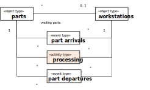
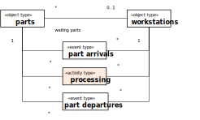

Discrete Event Simulation with DPMN, Simio and AnyLogic
Copyright © 2021 G. Wagner
Draft version, published 2021-02-22.
Abstract
This book explains how to design discrete event simulations with the Discrete Event Process Modeling Notation (DPMN) and how to implement them with Simio and AnyLogic. DPMN is based on the Object Event Modeling and Simulation (OEM&S) paradigm, representing a general Discrete Event Simulation approach based on object-oriented modeling and event scheduling.
This book is also available in the following formats:
Table of Contents
- List of Figures
- List of Tables
- 1. Introduction to Discrete Event Simulation Engineering
- 2. Event-Based Simulation
- 3. Activity-Based Simulation
- 4. Processing Activities and Processing Networks
- 5. Case Studies
- Bibliography
- Index
List of Figures
- 1-1. From conceptualization via design to implementation
- 1-2. The entity types Shop and Delivery.
- 1-3. Adding properties and operations.
- 1-4. Adding a property constraint and an operation constraint.
- 1-5. Object and event types as two different categories of entity types.
- 1-6. A BPMN Process Diagram for a pizza service company
- 1-7. A DPMN Process Diagram for a pizza service company
- 1-8. A process design model in the form of a basic DPMN Process Diagram
- 1-9. An information design model in the form of a basic OE class model
- 1-10. A DPMN-A process model and its underlying OE class model
- 1-11. A DPMN-A process model with a resource-dependent activity start arrow and its underlying OE class model
- 1-12. A DPMN-A process model of a Load-Haul-Dump business process
- 2-1. A conceptual information model of a manufacturing workstation system
- 2-2. A conceptual process model of a manufacturing workstation system
- 2-3. An information design model
- 2-4. A process design model in the form of a DPMN Process Diagram
- 3-1. Introducing an activity type in a conceptual information model of a single workstation system.
- 3-2. Introducing an activity type in a conceptual process model of a single workstation system.
- 3-3. Going from basic OEM to OEM-A class models by introducing activity types.
- 3-4. Going from basic DPMN to DPMN-A process models by introducing Activity rectangles.
- 3-5. Allocating the workstation as a resource of Processing activities
- 3-6. The resources required for performing an activity include the activity's performer.
- 3-7. Activity types may have special properties representing resource roles.
- 3-8. A conceptual information model of the activity type "examinations" with resource roles.
- 3-9. A conceptual process model based on the information model of Figure 3-8.
- 3-10. A conceptual information model with doctors and patients as people.
- 3-11. Adding the activity type "walks to room" to the conceptual information model.
- 3-12. A conceptual process model based on the information model of Figure 3-11.
- 3-13. An improved process model based on the information model of Figure 3-11.
- 3-14. Displaying the process owner and activity performers in a conceptual process model.
- 3-15. Adding parallel participation multiplicities for rooms participating both in walks and examinations at the same time.
- 3-16. An information model for the simplified design with the resource counters nmrOfRooms and nmrOfDoctors.
- 3-17. A process design model based on the information design model of Figure 3-16.
- 3-18. An OEM-A class model with resource object types for modeling resource roles and pools.
- 3-19. A process design model based on the information design model of Figure 3-18.
- 3-20. Any resource type R extends the pre-defined object type
Resource - 3-21. A simplified version of the model of Figure 3-18
- 3-22. An OE Class Diagram modeling a single workstation system with resource-constrained processing activities
- 3-23. An information design model for decoupling the allocation of rooms and doctors.
- 3-24. A process design model based on the information design model of Figure 3-23.
- 3-25. Representing the process owner as a Pool and activity performers as Lanes in a process design model.
- 3-26. A conceptual modeling pattern for a sequence of resource-constrained activities
- 3-27. Using resource-dependent activity start arrows in a conceptual process model.
- 3-28. Displaying the implicit allocate-release steps.
- 3-29. Modeling WorkStation as a resource type
- 3-30. A simplified version of the workstation process model using a resource-dependent activity start arrow.
- 3-31. A simplified version of the medical department information model with Doctor and Room as resource types
- 3-32. A simplified version of the medical department process model using resource-dependent activity start arrows.
- 4-1. Resource-constrained activities involving processing objects are processing activities.
- 4-2. A conceptual OEM class model defining built-in types for conceptual PN modeling
- 4-3. A PN model using the new DPMN modeling elements of PN Node rectangles and PN Flow arrows
- 4-4. A DPMN-PN process diagram with an Event Scheduling arrow
- 4-5. An OEM class design model defining built-in types for making PN design models
- 4-6. A PN model of a workstation system using PN Node rectangles and PN Flow arrows
- 4-7. A PN model of a workstation system where parts may have to be reworked
- 4-8. A PN model using the new DPMN modeling elements of PN Node rectangles and PN Flow arrows
- 5-1. An information design model defining object, event and activity types.
- 5-2. A computationally complete process design for the Make-and-Deliver-Pizza business process.
- 5-3. A design model for the
HaulRequestevent rule. - 5-4. A design model for the
GoToLoadingSiteevent rule. - 5-5. A design model for the
Loadevent rule. - 5-6. A design model for the
Haulevent rule. - 5-7. A design model for the
Dumpevent rule. - 5-8. A design model for the
GoBackToLoadingSiteevent rule. - 5-9. A DPMN process design model for the Load-Haul-Dump business process.
- 5-10. An AnyLogic process diagram for the Load-Haul-Dump business process.
- 5-11. A conceptual OE class model describing object, event and activity types.
- 5-12. A refined conceptual process model.
- 5-13. An information design model defining object, event and activity types.
- 5-14. A computationally complete process design for the Load-Haul-Dump business process.
- 5-15. A design model for the
HaulRequestevent rule. - 5-16. A design model for the
GoToLoadingSiteevent rule. - 5-17. A design model for the
Loadevent rule. - 5-18. A design model for the
Haulevent rule. - 5-19. A design model for the
Dumpevent rule. - 5-20. A design model for the
GoBackToLoadingSiteevent rule. - 5-21. A DPMN process design model for the Load-Haul-Dump business process.
- 5-22. An AnyLogic process diagram for the Load-Haul-Dump business process.
List of Tables
Chapter 1. Introduction to Discrete Event Simulation Engineering
The Event Graph (EG) diagrams of Schruben (1983) allow defining computationally complete process design models for event-based simulation, which can be viewed as the most fundamental Discrete Event Simulation (DES) paradigm. In these diagrams, circles represent event types, and arrows between two event type circles A and B represent event scheduling with a future events list in the sense that an occurrence of an event of type A in a simulation run causes the simulator to schedule a future event of type B.
1.1. What Is Discrete Event Simulation?
The term Discrete Event Simulation (DES) has been established as an umbrella term subsuming various kinds of computer simulation approaches, all based on the general idea of modeling entities/objects and events. In the DES literature, it is often stated that DES is based on the concept of entities flowing through the system
(more precisely, through a queueing network
). This is the paradigm of an entire class of simulation software in the tradition of GPSS (Gordon, 1961) and SIMAN/Arena (Pegden & Davis, 1992). However, this paradigm characterizes a special (yet important) class of DES only, it does not apply to all discrete event systems.
Pegden (2010) explains that the 50 year history of DES has been shaped by three fundamental paradigms: Markowitz, Hausner and Karr (1962) pioneered the event worldview with SIMSCRIPT, Gordon (1961) pioneered the Processing Network worldview with GPSS, and Dahl and Nygaard (1967) pioneered the object worldview with Simula. Notice that we have changed Pegden’s original name “process worldview” to “Processing Network worldview” because this paradigm is not based on a general concept of processes, but rather on a special concept of processing processes where entities are subject to processing steps performed at the nodes of a (queueing) network.
While the concept of an event is often limited to instantaneous events in the area of DES, the general concept of an event, as discussed in philosophy and in many fields of computer science, includes composite events and events with non-zero duration.
A discrete event system (or discrete dynamic system) consists of
- objects (of various types) having a state (consisting of qualities) and dispositions,
- events (of various types) triggering certain dispositions of objects participating in them,
such that the states of affected objects may be changed by events according to the dispositions triggered by them. It is natural to consider the concept of discrete events, occurring at times from a discrete set of time points.
For modeling a discrete event system as a state transition system, we have to describe its
- object types , e.g., in the form of classes of an object-oriented language;
- event types , e.g., in the form of classes of an object-oriented language;
- causal regularities (disposition types) e.g., in the form of event rules.
Any DES formalism has one or more language elements that allow specifying event rules representing causal regularities. These rules specify, for any event type, the state changes of objects and the follow-up events caused by the occurrence of an event of that type, thus defining the dynamics of the transition system. Unfortunately, this is often obscured by the standard definitions of DES that are repeatedly presented in simulation textbooks and tutorials.
According to Pegden (2010), a simulation modeling worldview provides a framework for defining a system in sufficient detail that it can be executed to simulate the behavior of the system
. It must precisely define the dynamic state transitions that occur over time
. Pegden explains that the 50 year history of DES has been shaped by three fundamental paradigms: Markowitz, Hausner, and Karr (1962) pioneered the event worldview with SIMSCRIPT, Gordon (1961) pioneered the processing network worldview with GPSS, and Dahl and Nygaard (1966) pioneered the object worldview with Simula. Pegden characterizes these paradigms in the following way:
Event worldview: The system is viewed as a series of instantaneous events that change the state of the system over time. The modeler defines the events in the system and models the state changes that take place when those events occur. According to Pegden, the event worldview is the most fundamental worldview since the other worldviews also use events, at least implicitly.
Processing Network worldview: The system under investigation is described as a processing network where entities flow through the system
(or, more precisely, work objects are routed through the network) and are subject to a series of processing steps performed at processing nodes through processing activities, possibly requiring resources and inducing queues of work objects waiting for the availability of resources (processing networks have been called queueing networks
in Operations Research). This approach allows high-level modeling with semi-visual languages and is therefore the most widely used DES approach nowadays, in particular in manufacturing industries and service industries. Simulation platforms based on this worldview may or may not support object-oriented modeling and programming.
Object worldview: The system is modeled by describing the objects that make up the system. The system behavior emerges from the interaction
of these objects.
All three worldviews lack important conceptual elements. The event worldview does not consider objects with their (categorical and dispositional) properties. The processing network worldview neither considers events nor objects. And the object worldview, while it considers objects with their categorical properties, does not consider events. None of the three worldviews includes modeling the dispositional properties of objects with a full-fledged explicit concept of event rules.
The event worldview and the object worldview can be combined in approaches that support both objects and events as first-class citizens. This seems highly desirable because (1) objects (and classes) are a must-have in today’s state-of-the-art modeling and programming, and (2) a general concept of events is fundamental in DES, as demonstrated by the classical event worldview. We use the term object-event worldview for any DES approach combining OO modeling and programming with a general concept of events.
1.2. Model-Driven Engineering
Model-Driven Engineering (MDE), also called model-driven development, is a well-established paradigm in software engineering. Since simulation engineering can be viewed as a special case of software engineering, it is natural to apply the ideas of MDE also to simulation engineering.
In MDE, there is a distinction between three kinds of models as engineering artifacts created in the analysis, design and implementation phases of a development project:
- domain models (also called conceptual models), which describe a real-world domain (and are independent of a computational solution),
- design models, which define platform-independent solution designs,
- implementation models, which are platform-specific.
Domain models are solution-independent descriptions of a problem domain produced in the analysis phase. A domain model may include both descriptions of the domain's state structure (in conceptual information models) and descriptions of its processes (in conceptual process models). They are solution-independent, or computation-independent, in the sense that they are not concerned with making any system design choices or with other computational issues. Rather, they focus on the perspective and language of the subject matter experts for the domain under consideration.
In the design phase, first a platform-independent design model, as a general computational solution, is developed on the basis of the domain model. The same domain model can potentially be used to produce a number of (even radically) different design models. Then, by taking into consideration a number of implementation issues ranging from architectural styles, nonfunctional quality criteria to be maximized (e.g., performance, adaptability) and target technology platforms, one or more platform-specific implementation models are derived from the design model. These one-to-many relationships between conceptual models, design models and implementation models are illustrated in Figure 1-1.

In general, a model does not consist of just one model diagram including all viewpoints or aspects of the system to be developed. Rather it consists of a set of models, one (or more) for each viewpoint. The two most important viewpoints, crosscutting all three modeling levels (domain conceptualization, design and implementation) are
- information modeling, which is concerned with the state structure of the domain, design or implementation;
- process modeling, which is concerned with the dynamics of the domain, design or implementation.
Examples of widely used languages for information modeling are Entity Relationship (ER) Diagrams and UML Class Diagrams. Since the latter subsume the former, we prefer using UML class diagrams for making all kinds of information models, including SQL database models.
Examples of widely used languages for process modeling are (Colored) Petri Nets, UML Sequence Diagrams, UML Activity Diagrams and the BPMN. Notice that there is more agreement on the right concepts for information modeling than for process modeling, as indicated by the much larger number of different process modeling languages. This reflects a lower degree of understanding the nature of events and processes compared to understanding objects and their relationships.
Model-driven simulation engineering is based on the same kinds of models as model-driven software engineering: going from a domain model via adesign model to an implementation model for the simulation platform of choice (or to several implementation models if there are several target simulation platforms). The specific concerns of simulation engineering, like, e.g., the concern to capture certain parts of the overall system dynamics with the help of random variables, do not affect the applicability of MDE principles. However, they define requirements for the modeling languages to be used.
1.3. Information Modeling with UML Class Diagrams
Conceptual information modeling is mainly concerned with describing the relevant entity types of a real-world domain and the relationships between them, while information design and implementation modeling are concerned with describing the logical (or platform-independent) and platform-specific data structures (in the form of classes) for designing and implementing a software system or simulation. The most important kinds of relationships between entity types to be described in an information model are associations and subtype/supertype relationships, which are called ‘generalizations’ in UML.
In UML Class Diagrams, an entity type is described with a name, and possibly with a list of properties and operations (called methods when implemented), in the form of a class rectangle with one, two or three compartments, depending on the presence of properties and operations. Integrity constraints, which are conditions that must be satisfied by the instances of a type, can be expressed in special ways when defining properties or they can be explicitly attached to an entity type in the form of an invariant box.
An association between two entity types is expressed as a connection line between the two class rectangles representing the entity types. The connection line is annotated with multiplicity expressions at both ends. A multiplicity expression has the form m..n where m is a non-negative natural number denoting the minimum cardinality, and n is a positive natural number (or the special symbol * standing for unbounded) denoting the maximum cardinality, of the sets of associated entities. Typically, a multiplicity expression states an integrity constraint. For instance, the multiplicity expression 1..3 means that there are at least 1 and at most 3 associated entities. However, the special multiplicity expression 0..* (also expressed as *) means that there is no constraint since the minimum cardinality is zero and the maximum cardinality is unbounded.
For instance, the model shown in Figure 3 describes the entity types Shop and Delivery, and it states that
- there are two classes:
ShopandDelivery, representing entity types; - there is a one-to-many association between the classes
ShopandDelivery, where a shop is thereceiverof a delivery.

Using further compartments in class rectangles, we can add properties and operations. For instance, in the model shown in Figure 4, we have added
- the properties name and stockQuantity to
Shopand quantity toDelivery, - the instance-level operation onEvent to
Delivery, - the class-level operation leadTime to
Delivery.

Notice that in Figure 4, each property is declared together with a datatype as its range. Likewise, operations are declared with a (possibly empty) list of parameters, and with an optional return value type. When an operation (or property) declaration is underlined, this means that it is class-level instead of instance-level. For instance, the underlined operation declaration leadTime(): Decimal indicates that leadTime is a class-level operation that does not take any argument and returns a decimal number.
We may want to define various types of integrity constraints for better capturing the semantics of entity types, properties and operations. The model shown in Figure 5 contains an example of a property constraint and an example of an operation constraint. These types of constraints can be expressed within curly braces appended to a property or operation declaration. The keyword id in the declaration of the property name in the Shop class expresses an ID constraint stating that the property is a standard identifier, or primary key, attribute. The expression Exp(0.5) in the declaration of the random variable operation leadTime in the Delivery class denotes the constraint that the operation must implement the exponential probability distribution function with event rate 0.5.
UML allows defining special categories of modeling elements called stereotypes
. For instance, for distinguishing between object types and event types as two different categories of entity types we can define corresponding stereotypes of UML classes («object type» and «event type») and use them for categorizing classes in class models, as shown in Figure 6.
Another example of using UML’s stereotype feature is the designation of an operation as a function that represents a random variable using the operation stereotype «rv» in the diagram of Figure 6.
A class may be defined as abstract by writing its name in italics, as in the example model of Figure 11. An abstract class cannot have direct instances. It can only be indirectly instantiated by objects that are direct instances of a subclass.
A good overview of the most recent version of UML (UML 2.5) is provided by www.uml-diagrams.org/uml-25-diagrams.html.
1.4. Process Modeling with BPMN and DPMN
The Business Process Modeling Notation (BPMN) is an activity-based graphical modeling language for defining business processes following the flow-chart metaphor. In 2011, the Object Management Group has released version 2.0 of BPMN with an optional execution semantics based on Petri-Net-style token flows.
The most important elements of a BPMN process model are listed in .
| Name of element | Meaning | Visual symbol(s) |
|---|---|---|
Event |
|  |
Activity |
|  |
Gateway | A Gateway is a node for branching or merging control flows. A Gateway with an "X" symbol denotes an Exclusive OR-Split for conditional branching, if there are 2 or more output flows, or an Exclusive OR-Join, if there are 2 or more input flows. A Gateway with a plus symbol denotes an AND-Split for parallel branching, if there are 2 or more output flows, or an AND-Join, if there are 2 or more input flows. A Gateway can have both input and output flows. |  |
Sequence Flow | An arrow expressing the temporal order of Events, Activities, and Gateways. A Conditional Sequence Flow arrow starts with a diamond and is annotated with a condition (in brackets). |  |
Data Object | Data Objects may be associated with Events or Activities, providing a context for reading/writing data. A unidirectional dashed arrow denotes reading, while a bidirectional dashed arrow denotes reading/writing. |  |
A good modeling tool, with the advantages of an online solution, is the Signavio Process Editor, which is free for academic use (www.signavio.com/bpm-academic-initiative).
BPMN process diagrams can be used for making
- conceptual process models , e.g., for documenting existing business processes and for designing new business processes;
- process automation models for specific process automation platforms (that allow partially or fully automating a business process) by adding platform-specific technical details in the form of model annotations that are not visible in the diagram.
The following diagram shows an example of a BPMN process model.

However, the BPMN process diagram language has several semantic issues and is not expressive enough for making platform-independent process design models that can be used for designing DES models.
Shortcomings of BPMN
Notice the BPMN Boundary Timeout Event circle attached to the take order activity in Figure 1-6 representing timeout events that cancel the activity. They are supposed to model the reneging behavior of waiting customers loosing their patience and hanging up the phone without placing an order. However, BPMN does not allow restricting such a timeout mechanism to the waiting phase of a task (planned activity), that is the time span during which the task has been enqueued, but not yet started. Rather, it applies to the entire cycle time of take order activities, which means that also started activities, where the order taker is already listening to the customer, may be canceled due to reneging.
While BPMN allows modeling the performers of activities with swimlanes (referring to organizational positions with corresponding resource pools), it does not support modeling other types of resource objects, such as machines or rooms. As a workaround, the model above includes two BPMN Data Objects, ovens and scooters, for representing resource objects. Also, BPMN does not allow specifying resource cardinality constraints (e.g., for stating that making a pizza requires two pizza makers and one oven).
The third, and most severe, issue of the BPMN model is its uniform (semantically overloaded) use of "sequence flow" arrows for sequencing both events and activities. While in the case of all three activities, incoming "sequence flow" arrows do not mean that an activity is started, but rather that a new task is enqueued (and only started when all required resources become available), in the case of the lost order event, the incoming "sequence flow" arrow means that a new event is scheduled to occur immediately.
BPMN has the following issues:
- A limited concept of "business processes" as isolated "cases", which does not allow to account for any dependency between business processes (e.g., competing for resources).
- Overloading/ambiguity of sequence flow arrows, which represent various kinds of connections, including resource-independent event flows and resource-dependent activity scheduling.
- Insufficient integration of the objects that participate in a process.
- Insufficient support of resource management. In particular, no other resources except (human) performers can be modeled, and the important concepts of resource cardinality constraints, resource pools, alternative resource types and resource allocation priorities are not supported.
- No support of processing activities and processing networks, which are generalized queueing networks where processing objects enter a system via arrival events and then "flow through the system".
- No convincing formal semantics. BPMN's execution semantics is defined in terms of an abstract Petri-Net-style "token" flow (following the predominant academic paradigm), which does not match its intuitive semantics based on event flows and resource-dependent activity scheduling.
DPMN solves the issues of BPMN
The Discrete Event Process Modeling Notation (DPMN) is a Discrete Event Simulation modeling language based on Event Graphs (Schruben 1983) and BPMN. It combines the intuitive flowchart modeling style of BPMN with the rigorous semantics provided by the event scheduling arrows of Event Graphs and the event rules of the Object Event Modeling and Simulation (OEM&S) paradigm (Wagner 2017a, Wagner 2018b).DPMN adapts the language of BPMN Process Diagrams for the purpose of simulation design modeling where a process model must represent a computationally complete process specification. While large parts of BPMN’s vocabulary, visual syntax and informal semantics can be preserved in DPMN, a number of modeling elements need to be modified.
The following diagram shows the DPMN process model corresponding to the BPMN model shown in Figure 1-6 above.
DPMN adopts and adapts the syntax and semantics of BPMN in the following way:
- Instead of BPMN's "Sequence Flow" arrows, DPMN has
- Event Flow arrows, or Event Scheduling arrows, like in Event Graphs, representing the causation of follow-up events in conceptual process models, corresponding to event scheduling in process design models. For instance, in Figure 1-7, the arrow from the time out event at the "take order" task buffer to the "lost orders" event is an event flow arrow.
- Resource-Dependent Activity Scheduling (RDAS) arrows with three bars representing an input task buffer. For instance, in Figure 1-7, "order calls" events and "take order" activities, and "take order" and "make pizza" activities, are connected via an RDAS arrow.
- A DPMN Process Diagram has an underlying UML Class Diagram defining its types (including object, event and activity types). These type definitions also include definitions of resource roles, resource cardinality constraints and resource pools, which provide the information needed for resource management in process executions. It's an option to exhibit resource roles and resource cardinality constraints in a DPMN process model, such as in the model of Figure 1-7, which includes
- the two (non-performer) resources "ovens" and "scooters" assigned to the activities "make pizza" and "deliver pizza" via resource associations visually indicated by a small black square-shaped dot;
- resource cardinality constraints for all activities: (a) for the performer role of "make pizza" activities, the resource cardinality constraint "exactly 2" is expressed with the annotation "[2]" appended to the performer role name "pizza makers", (b) the resource associations for assigning an oven and a scooter to "make pizza" and "deliver pizza" activities are annotated with "1" expressing the constraint that exactly one resource object is required for performing these activities; as a result of the resource association of the "oven" resource object with the "make pizza" activity and the attached resource cardinality constraint "exactly 1" in conjunction with the "pizza makers [2]" performer cardinality constraint, it holds that a "make pizza" activity requires exactly two pizza makers (as performers) and one oven.
A conceptual DPMN process model describes the causal regularities of a real world process, while a DPMN process design model defines event rules that capture causal regularities.
1.5. Object Event Modeling and Simulation
Object Event (OE) Modeling and Simulation (M&S) is a new general Discrete Event Simulation (DES) paradigm based on the two most important ontological categories: objects and events. In philosophy, objects have also been called endurants or continuants, while events have also been called perdurants or occurrents.
OEM&S combines Object-Oriented (OO) Modeling with the event scheduling paradigm of Event Graphs (Schruben 1983). The relevant object types and event types are described in an information model, which is the basis for making a process model. A modeling approach that follows the OEM paradigm is called an OEM approach. Such an approach needs to choose, or define, an information modeling language (such as Entity Relationship Diagrams or UML Class Diagrams) and a process modeling language (such as UML Activity Diagrams or BPMN Process Diagrams).
We propose an OEM approach based on UML Class Diagrams for conceptual information modeling and information design modeling, as well as DPMN Process Diagrams for conceptual process modeling and for process design modeling.
In the proposed approach, object types and event types are modeled as special categories of classes in a UML Class Diagram. Random variables are modeled as a special category of class-level operations constrained to comply with a specific probability distribution such that they can be implemented as static methods of a class. Queues are not modeled as objects, but rather as ordered association ends, which can be implemented as collection-valued reference properties. Finally, event rules, which include event routines, are modeled in DPMN process diagrams (and possibly also in pseudo-code), such that they can be implemented in the form of special onEvent methods of event classes.
Like Petri Nets and DEVS, OEM&S has a formal semantics. But while Petri Nets and DEVS are abstract computational formalisms without an ontological foundation, OEM&S is based on the ontological categories of objects, events and causal regularities.
In model-based simulation engineering, we distinguish between (1) a conceptual model describing a real-world problem domain, and (2) a simulation design model defining a certain computational solution for the purpose of a simulation study. Both conceptual models and design models consist of an OE class model describing/defining the system's state structure (in the form of object types and event types, and the associations between them) and a DPMN process model describing/defining the system's dynamics (in the form of causal regularities captured by event rules).
An OEM approach results in a simulation design model that has a well-defined operational semantics in terms of a transition system based on the event rules modeled in a DPMN process design diagram, as shown by Wagner (2017a). Such a model can, in principle, be implemented with any object-oriented (OO) simulation technology. However, a straightforward implementation can only be expected from a technology that implements the OEM&S paradigm, such as the OES JavaScript (OESjs) framework.
1.6. Discrete Event Processes, Business Processes and Processing Processes
A discrete event process consists of a partially ordered set of events that cause a corresponding sequence of discrete state changes of affected objects. When two or more events within such a process have the same order rank, this means that they occur simultaneously. A discrete event process, also known more simply as a discrete process, may be an instance of a discrete process type defined by a discrete process model.
A business process is a discrete process that serves certain business purposes of an organization and involves events and activities performed by actors of the organization. Typically, a business process is an instance of a business process type defined by an organization (or organizational unit), which is the owner of the business process type, in the form of a business process model.
A business process model defines an Activity Network (AN) consisting of event and activity nodes connected by means of event flow arrows and resource-dependent activity scheduling (RDAS) arrows, such that event and activity nodes may be associated with objects representing their participants. In the case of an activity node, these participating objects include the resource objects required for performing an activity. Typically, an activity node is associated with a particular resource object representing the activity performer.
An RDAS arrow from an activity node (or an event) to a successor activity node expresses the fact that a corresponding activity end event (or plain event) triggers the conditional scheduling of a successor activity start event, corresponding to the creation of a new task in the task queue of (the performer of) the successor activity .
An activity node of an AN typically has a queue of tasks (or planned activities) waiting for the availability of the required resources.
A processing process is a business process involving arrival events, processing activities and departure events. An arrival event for one or more processing objects happens at an entry station, from where they are routed to a processing station where processing activities are performed on them, before they are routed to another processing station or to an exit station where they leave the system via a departure event.
A processing process model defines a Processing Network (PN) consisting of entry nodes, processing nodes and exit nodes where each node represents a combination of a spatial object and an event type:
- Defining an entry node means defining both an entry station object (e.g., a reception area or a factory entrance) and an arrival event type for arriving processing objects (such as people or manufacturing parts).
- Defining a processing node means defining both a processing station object (often used as a resource object, such as a workstation or a room) and a processing activity type.
- Defining an exit node means defining both an exit station object and a departure event type.
In a PN, all processing nodes have an input buffer (or queue) filled with processing objects that wait to be processed. A PN where all processing activities have exactly one abstract resource (a "server") is also known as a Queuing Network in Operations Research (where processing nodes are called "servers" and processing objects are called "entities" or "jobs").
For accommodating resource-constrained activities and Processing Networks, basic OEM and DPMN are extended in two steps. The first extension, OEM/DPMN-A, comprises four new information modeling categories (activity types, resource roles, resource pools, and parallel participation) and one new process modeling element (RDAS arrows), while the second extension, OEM/DPMN-PN, comprises a set of four pre-defined object type categories (processing objects, entry stations, processing stations, exit stations), two pre-defined event type categories (arrival events, departure events), one activity type category (processing activities), three node type categories (entry nodes, processing nodes, exit nodes) and one new process modeling element (object flow arrows).
A. Discrete Event Processes and Event Graphs
A discrete event process consists of a partially ordered set of events that cause a corresponding sequence of discrete state changes of affected objects. When two or more events within such a process have the same order rank, this means that they occur simultaneously.
As an example of a discrete event process we consider a manufacturing process with a workstation and three types of events: PartArrival events, ProcessingStart events and ProcessingEnd events.
The example process is described by the following list of event expressions: PartArrival@1, ProcessingStart@1.01, PartArrival@5.4, PartArrival@6.5, ProcessingEnd@8.47, ProcessingStart@8.48, ProcessingEnd@11.95, ProcessingStart@11.96, ProcessingEnd@17.48, where an expression E@t represents an event of type E occurring at time t.
How this process unfolds in time is illustrated by the following process log:
| Step | Time | System State | Future Events |
|---|---|---|---|
| 0 | 0 | WorkStation-1{ bufLen: 0, status: "AVAILABLE"} | PartArrival@1 |
| 1 | 1 | WorkStation-1{ bufLen: 1, status: "AVAILABLE"} | ProcessingStart@1.01, PartArrival@5.4 |
| 2 | 1.01 | WorkStation-1{ bufLen: 1, status: "BUSY"} | PartArrival@5.4, ProcessingEnd@8.47 |
| 3 | 5.4 | WorkStation-1{ bufLen: 2, status: "BUSY"} | PartArrival@6.5, ProcessingEnd@8.47 |
| 4 | 6.5 | WorkStation-1{ bufLen: 3, status: "BUSY"} | ProcessingEnd@8.47 |
| 5 | 8.47 | WorkStation-1{ bufLen: 2, status: "BUSY"} | ProcessingStart@8.48 |
| 6 | 8.48 | WorkStation-1{ bufLen: 2, status: "BUSY"} | ProcessingEnd@11.95 |
| 7 | 11.95 | WorkStation-1{ bufLen: 1, status: "BUSY"} | ProcessingStart@11.96 |
| 8 | 11.96 | WorkStation-1{ bufLen: 1, status: "BUSY"} | ProcessingEnd@17.48 |
| 9 | 17.48 | WorkStation-1{ bufLen: 0, status: "AVAILABLE"} |
The events of a real-world discrete event process happen in a coherent spatio-temporal region determined by the locations of the events' participants. In a simulation model, one may abstract away from the aspect of space and model objects without locations, implying that events and processes happen in time, but not in space.
A discrete event process, also known more simply as a discrete process, may be an instance of a discrete process type defined by a discrete process model. A discrete event process pattern can be modeled in the form of a basic DPMN process diagram, which is an extended Event Graph.
The Event Graph modeling language proposed by Schruben (1983) defines directed graphs where the nodes are Event circles (representing typed event variables) annotated with state change statements in the form of state variable assignments, and the edges are arrows representing event flows. In the case of a conceptual process model, event flow arrows express the causation of follow-up events. In the case of a process simulation design model, event flow arrows express the scheduling of follow-up events according to the event scheduling paradigm of Discrete Event Simulation.
Basic DPMN extends the Event Graph diagram language by adding object rectangles containing declarations of typed object variables and state change statements, as well as gateway diamonds for expressing conditional and parallel branching.
The following basic DPMN diagram is an extended Event Graph defining a process pattern that is instantiated by the above discrete event process example.

This process model is based on the following Object Event (OE) class model:
A DPMN process design model specifies a set of chained event rules, one rule for each Event circle of the model. The above model specifies the following three event rules:
- On each PartArrival event, the inputBufferLength attribute of the associated WorkStation object is incremented and if the workstation's status attribute has the value AVAILABLE, then a new ProcessingStart event is scheduled to occur immediately.
- When a ProcessingStart event occurs, the associated WorkStation object's status attribute is changed to BUSY and a ProcessingEnd event is scheduled with a delay provided by invoking the processingTime function defined in the ProcessingStart event class.
- When a ProcessingEnd event occurs, the inputBufferLength attribute of the associated WorkStation object is decremented and if the inputBufferLength attribute has the value 0, the associated WorkStation object's status attribute is changed to AVAILABLE. If the inputBufferLength attribute has a value greater than 0, a new ProcessingStart event is scheduled to occur immediately.
The formal (transition system) semantics of basic DPMN diagrams, based on the semantics of event rules as transition functions, has been presented in (Wagner 2017a). It can be shown that the basic DPMN diagram language is a conservative extension of the Event Graph diagram language by means of a homomorphic embedding of Event Graphs in DPMN diagrams.
B. Business Processes and Activity Networks
An activity is a composite event that is composed of, and temporally framed by, a pair of start and end events.
A business process of an organization is a discrete event process that includes activities performed by actors of the organization for serving certain business purposes of the organization. In addition to its performer, an activity may involve further resources, and allocating the required resources from resource pools during the course of a business process is essential for keeping it going.
As an example of a business process we consider a manufacturing process with a workstation and three types of events: PartArrival events, Processing-Activity-Start events and Processing-Activity-End events.
The example business process is described by the following list of event expressions: PartArrival@1, Processing-Activity-Start@1.01, PartArrival@5.4, PartArrival@6.5, Processing-Activity-End@8.47, Processing-Activity-Start@8.48, Processing-Activity-End@11.95, Processing-Activity-Start@11.96, Processing-Activity-End@17.48, where an expression E@t represents an event of type E occurring at time t.
How this process unfolds in time is illustrated by the following process log:
| Step | Time | System State | Future Events |
|---|---|---|---|
| 0 | 0 | WorkStation-1{ status: 1} | av. workStations: ws1 | PartArrival@1 |
| 1 | 1 | WorkStation-1{ status: 2} | av. workStations: | Processing-Activity-Start{ ws1 }@1.01, PartArrival@18.83 |
| 2 | 1.01 | WorkStation-1{ status: 2} | av. workStations: | Processing-Activity-End{ ws1 }@8.08, PartArrival@18.83 |
| 3 | 8.08 | WorkStation-1{ status: 1} | av. workStations: ws1 | PartArrival@18.83 |
| 4 | 18.83 | WorkStation-1{ status: 2} | av. workStations: | Processing-Activity-Start{ ws1 }@18.84, PartArrival@25.61 |
| 5 | 18.84 | WorkStation-1{ status: 2} | av. workStations: | Processing-Activity-End{ ws1 }@23.9, PartArrival@25.61 |
| 6 | 23.9 | WorkStation-1{ status: 1} | av. workStations: ws1 | PartArrival@25.61 |
| 7 | 25.61 | WorkStation-1{ status: 2} | av. workStations: | Processing-Activity-Start{ ws1 }@25.62 |
| 8 | 25.62 | WorkStation-1{ status: 2} | av. workStations: | Processing-Activity-End{ ws1 }@32.03 |
| 9 | 32.03 | WorkStation-1{ status: 1} | av. workStations: ws1 |
Notice that, as opposed to the process log shown in Table 1-1,
- the workstation with ID 1 is a (performer) resource for Processing activities having either the status 1 (being available) or 2 (being busy), and
- there is a pool of available resources ("av. workStations").
Typically, a business process is an instance of a business process type defined by an organization (or organizational unit), which is the owner of the business process type, in the form of a business process model. The above example business process is an instance of the following model:
A business process model defines an Activity Network (AN), which provides a pattern for business processes. An AN specifies a set of chained event rules with typed object, event and activity variables, based on an OE class model defining object, event and activity types. By convention, activity classes have a duration function that is invoked for getting the duration of newly created instances of the activity class. In a simulation design model, these functions typically define random variate sampling functions (like the service time concept in queuing theory).
Event circles and Activity rectangles may be connected via event flow arrows, as shown above in Figure 1-10, or via resource-dependent activity scheduling arrows, as shown below in Figure 1-11.
The AN shown in Figure 1-10 defines the following event rules:
- On each PartArrival event, if the associated WorkStation object's status attribute has the value AVAILABLE, then it is set to BUSY and the rule variable wsAllocated is set to true; otherwise the inputBufferLength attribute of the associated WorkStation object is incremented. If wsAllocated holds, then a new Processing activity is scheduled to start immediately with a duration provided by invoking the duration function defined in the Processing activity class.
- When a Processing activity ends, if the inputBufferLength attribute of the associated WorkStation object has the value 0, then the WorkStation object's status attribute is set to AVAILABLE; otherwise the rule variable wsAllocated is set to true and the WorkStation object's inputBufferLength attribute is decremented. If wsAllocated holds, then a new Processing activity is scheduled to start immediately with a duration provided by invoking the duration function defined in the Processing activity class.
Since the resource management logic concerning the workstation as a resource for Processing activities follows a general pattern, a new modeling language element can be introduced for capturing this pattern. Using resource-dependent activity start arrows, we can express the process model of Figure 1-10 more simply as in the following diagram:

Notice that in this model, we have expressed that we no longer have to take care of setting the status of the workstation as a resource, nor do we have to update the queue/buffer length. This is now expressed implicitly by the semantics of the resource-dependent activity scheduling (RDAS) arrow and has to be handled in a generic way by a simulator supporting DPMN-A models.
The following diagram shows a model containing both event scheduling arrows and RDAS arrows:
In this model, activities are initiated (1) by an RDAS arrow when they may have to wait for the availability of required resources, or (2) by an event scheduling arrow when no other resources are required. For instance, a new Load activity can only be started, when a wheel loader (as a performer) is available, while a Haul activity can be started immediately after the completion of a Load activity because it's performed by the loaded truck, and no other resources are required.
The most widely used language for defining ANs is the Business Process Modeling Notation (BPMN). However, in BPMN there is only one type of arrow, called "Sequence Flow", which is semantically overloaded with both meanings: it can represent an event flow arrow or a resource-dependent activity start arrow.
The concept of ANs includes business system processes, where many business actors perform activities for handling many business cases in parallel. Consequently, it is more general than the common concept of a business process as a case-handling process.
Normally all activity nodes of an AN have a queue of planned activities ("tasks") waiting for the availability of required resources (in particular, their performer). Only if a successor activity node does not require additional or different resources, it does not have a (resource allocation) queue and can be started right away whenever a predecessor activity has completed, as indicated by an event flow arrow.
When all activity nodes of an AN only have a single resource (the performer of the activity), and each of them has a different performer, then the AN corresponds to a Queuing Network in the sense of Operations Research.
C. Processing Processes and Processing Networks
Chapter 2. Event-Based Simulation
Event-Based Simulation (ES) is the most fundamental form of Discrete Event Simulation (Pegden 2010). The ES paradigm has been pioneered by SIMSCRIPT (Markowitz, Hausner & Karr 1962) and later formalized by Event Graphs (Schruben 1983).
According to Pegden, in ES, the system under investigation is viewed as a series of instantaneous events that change its state over time. The modeler “defines the events in the system and models the state changes that take place when those events occur”. More precisely, the modeler defines the types of events that cause state changes and/or follow-up events.
Pegden also explains that in ES,
- a simulation creates events that are supposed to occur in the future (called future events),
- future events are scheduled (using an event scheduling mechanism),
- time advances to the time of the next event (next-event time progression),
- the series of events corresponds to a sequence of state transitions of a transition system where the “transition logic” of each event type is specified in the form of a procedure definition (often called event routine).
Event routines can be expressed at an abstract level, e.g., using pseudo code as in (Pegden 2010), or in a simulation or programming language. In an object-oriented approach, it is natural to define an event routine as a method of the class defining the event type.
Pegden does not make any attempt to clarify the philosophical nature of (types of) events and their “transition logic”. Philosophically, (1) all events have participants, which are the objects that participate in them; (2) the combination of an event type and its event routine amounts to an event rule of the form
ON event DO procedure
Basic Object Event Simulation (OES) extends ES, or Event Graphs, by adding the modeling concepts of objects and event rules.
2.1. Event-Based Simulation without Objects
When Event-Based Simulation (ES) was developed in the 1960's, pioneered by SIMSCRIPT, the software engineering paradigm of Object-Oriented (OO) modeling and OO programming was not yet available. Therefore, the objects of a system have not been modeled as objects, but rather the relevant characteristics of the (objects of) the system under investigation have been modeled in the form of state variables.
The ES Formalism
We illustrate the formal semantics of ES with the help of an example. We model a system of one or more service desks, each of them having its own queue, as a discrete event system characterized by the following narrative:
- Customers arrive at a service desk at random times.
- If there is no other customer in front of them, and the service desk is available, they are served immediately, otherwise they have to queue up in a waiting line.
- The duration of services varies, depending on the individual case.
- When a service is completed, the customer departs and the next customer is served, if there is still any customer in the queue.
The base concepts of ES are:
- state variables for defining the state of a system,
- event types,
- event expressions,
- event routines,
- future events lists (FEL).
A state variable is declared with a name and a range, which is a datatype defining its possible values.
An event type is defined in the form of a class: with a name, a set of property declarations and a set of method definitions, which together define the signature of the event type.
An event expression is a term E(x)@t where
- E is an event type,
- t is a parameter for the occurrence time of events,
- x is a (possibly empty) list of event parameters x1, x2, …, xn according to the signature of the event type E.
For instance, Arrival@t is an event expression for describing Arrival events where the signature of the event type Arrival is empty, so there are no event parameters, and the parameter t denotes the arrival time (more precisely, the occurrence time of the Arrival event). An individual event of type E is a ground event expression, e = E(v)@i, where the event parameter list x and the occurrence time parameter t have been instantiated with a corresponding value list v and a specific time instant i. For instance, Arrival@1 is a ground event expression representing an individual Arrival event.
An event routine is a procedure that essentially computes state changes and follow-up events, possibly based on conditions on the current state. In practice, state changes are often directly performed by immediately updating the state variables concerned, and follow-up events are immediately scheduled by adding them to the FEL. For defining the formal semantics of ES, we assume that an event routine is a pure function that computes state changes and follow-up events, but does not apply them, as in the rules described in Table 2-1.Event rule name | ON (event expression) | DO (event routine) |
rArr | Arrival @ t | E’ := { Arrival @ (t + recurrence()) } |
rDep | Departure @ t | E’ := {} |
An event rule associates an event expression with an event routine F:
ON E(x)@t DO F( t, x),
where the event expression E(x)@t specifies the type E of events that trigger the rule, and F( t, x) is a function call expression for computing a set of state changes and a set of follow-up events, based on the event parameter values x, the event's occurrence time t and the current system state, which is accessed in the event routine F for testing conditions expressed in terms of state variables.
A Future Events List (FEL) is a set of ground event expressions partially ordered by their occurrence times, which represent future time instants either from a discrete or a continuous model of time. The partial order implies the possibility of simultaneous events, as in the example { Departure@4, Arrival@4 }.
ES Models
An ES model is a triple ⟨ SV, ET, R ⟩ where
- SV is a set of state variable declarations defining the structure of possible system states,
- ET is a set of event type definitions,
- R is a set of event rules expressed in terms of SV and ET.
We show how to express the example model of a simple service desk system as an ES model. The set of state variables is a singleton:
SV = { queueLength: NonNegativeInteger}
There are two event types, both having an empty signature:
ET = { Arrival(), Departure()}
And there are two event rules:
R = { rArr, rDep}
which are defined as in Table 1 above.
Such a model, together with an initial state (specifying initial values for state variables and initial events), defines an ES system, which is a transition system where
- system states are defined by value assignments for the state variables,
- transitions are provided by event occurrences triggering event rules that change the simulation state through changing the system state (by changing the values of affected state variables) and the FEL (by adding follow-up events).
Whenever the transitions of an ES system involve computations based on random numbers (if the simulation model contains random variables), the transition system defined is non-deterministic.
For instance, assuming that the initial system state is S0 = {queueLength: 0}, and there is an initial event {Arrival@1}, then, as a consequence of applying rArr, there is a system state change {queueLength := 1} and, assuming a random service time of 2 time units (as a sample from the underlying probability distribution function), a follow-up event Departure@3, which has to be scheduled along with the next Arrival event, say Arrival@3 (with a random inter-arrival time of 2), because Arrival is an exogenous event type (with a random recurrence). Consequently, the next system state is S1 = {queueLength: 1}.
We need to distinguish between the system state, like S0 = {queueLength: 0}, which is the state of the simulated system, and the simulation state, which adds the FEL to the system state, like
S0 = ⟨ {queueLength: 0}, {Arrival@1} ⟩
S1 = ⟨ {queueLength: 1}, {Arrival@2, Departure@3} ⟩
Doing one more step, the next transition is given by the next event Arrival@2 again triggering rArr, which leads to
S2 = ⟨ {queueLength: 2}, {Departure@3, Arrival@4} ⟩
In this way, we get a succession of states S0 → S1 → S2 → … as a history of the transition system defined by the ES model.
Event Rules as Functions
An event rule r = ON E(x)@t DO F( t, x) can be considered as a 2-step function that, in the first step, maps an event e = E(v)@i to a parameter-free state change function re = F( i, v), which maps a system state to a pair ⟨ Δ, E' ⟩ of system state changes Δ and follow-up events E'. When the parameters t and x of F( t, x) are replaced by the values i and v provided by a ground event expression E(v)@i, we also simply write Fi,v instead of F( i, v) for the resulting parameter-free state change function.
We say that an event rule r is triggered by an event e when the event’s type is the same as the rule’s triggering event type. When r is triggered by e, we can form the state change function re = Fi,v and apply it to a system state S by mapping it to a set of system state changes Δ and a set of follow-up events E':
re(S) = Fi,v(S) = ⟨ Δ, E' ⟩
We can illustrate this with the help of our running example. Consider the rule rArr defined in Table 1 above triggered by the event Arrival@1 in state S0 = {queueLength: 0}. The resulting state change function F1 defined by the corresponding event routine from Table 1 maps S0 to the set of state changes Δ = { INCREMENT queueLength} and the set of follow-up events E' = {Departure@3}. We show how the pair ⟨ Δ, E' ⟩ amounts to a transition of the simulation state in the next section.
In ES, a system state change is an update of one or more state variables. Such an update is specified in the form of an assignment where the right-hand side is an expression that may involve state variables. For instance, the state change INCREMENT queueLength is equivalent to the assignment queueLength := queueLength + 1.
In general, there may be situations, where we have several concurrent events, that is, there may be two or more events occurring at the same (next-event) time. Therefore, we need to explain how to apply a set of rules RE triggered by a set of events E, even if both sets are singletons in many cases.
The rule set R of an ES model can also be considered as a 2-step function that, in the first step, maps a set of events E to a state change function RE, which maps a system state to a pair ⟨ Δ, E' ⟩ of state changes Δ and follow-up events E'.
For a given set of events E and a rule set R, we can form the set of state change functions obtained from rules triggered by events from E:
RE = { re : r ∈ R & e ∈ E & e triggers r}
Notice that the elements C of RE are parameter-free state change functions, which can be applied as a block, in parallel, to a system state S:
RE(S) = ⟨ Δ, E' ⟩
with
Δ = ⋃ { ΔC : C ∈ RE & C(S) = ⟨ ΔC, E'C ⟩ }
E' = ⋃ { E'C : C ∈ RE & C(S) = ⟨ ΔC, E'C ⟩ }
Notice that when forming the union of all state changes brought about by applying rules from RE, and likewise when forming the union of all follow-up events created by applying rules from RE, the order of rule applications does not matter because they do not affect the applicability of each other, so any selection function for choosing rules from RE and applying them sequentially will do, and they could also be applied simultaneously if such a parallel computation is supported.
However, computing a set of state changes Δ raises the question if this set is, in some sense, consistent. A simple, but too restrictive, notion of consistent state changes would require that if Δ contains two or more updates of the same state variable, all of them must be equivalent (effectively assigning the same value). A more liberal notion just requires that if Δ contains two or more updates of the same state variable, their collective application must result in the same value for it, no matter in which order they are applied.
If Δ contains inconsistent updates for a state variable, this may be a bug or a feature of the simulation model. If it is not a bug, a conflict resolution policy is needed. The simplest policy is ignoring, or discarding, all inconsistent updates. Another common conflict resolution policy is based on assigning priorities to event rules.
Consider again our running example with a system state S = {queueLength: 1} and the set of next events N = {Arrival@4, Departure@4}. Then, RN consists of the two parameter-free change functions:
- F1: function () {Δ := { INCREMENT queueLength}; IF queueLength = 0 THEN
E' := { Departure @ (4 + serviceDuration())}; RETURN ⟨ Δ, E' ⟩ } - F2: function () {Δ := { DECREMENT queueLength}; IF queueLength > 1 THEN
E' := { Departure @ (4 + serviceDuration())}; RETURN ⟨ Δ, E' ⟩}
No matter in which order we apply F1 and F2, forming the union of their state changes always results in Δ = {}, because the incrementation and decrementation of the variable queueLength neutralize each other, and forming the union of their follow-up events always results in E' = { Departure@(4+d)} where d is the random value returned by the serviceDuration function.
An Event Rule Set as a Simulation State Transition Function
We show that the event rule set R of an ES model ⟨ SV, ET, R ⟩ defines a transition function that maps a simulation state ⟨ S, FEL ⟩ to a successor state ⟨ S', FEL' ⟩ in 3 steps:
- R maps the set of next events N extracted from the FEL to a set RN of state change functions of rules triggered by one of the next events from N.
- RN maps the current system state S to a set of state changes Δ and a set of follow-up events E'.
- The pair ⟨ Δ, E' ⟩ amounts to a transition of the current simulation state ⟨ S, FEL ⟩ by applying the updates from Δ to S yielding S’ and by removing N from FEL and adding E'.
We have already explained how to obtain RN from R and how to apply RN to S for getting ⟨ Δ, E' ⟩ in the previous subsection, so we only need to provide more explanation for the last step: processing ⟨ Δ, E' ⟩ for obtaining the next simulation state ⟨ S', FEL' ⟩.
We use the symbol Upd for denoting an update operation that takes a system state S and a set of state changes Δ, and returns an updated system state Upd( S, Δ). When the system state consists of state variables, the update operation simply performs assignments. Using this operation, we can define the third step of the simulation state transition function with two sub-steps in the following way:
- S' = Upd( S, Δ)
- FEL' = FEL − N ⋃ E'
This completes our definition of how the event rule set R of an ES model works as a transition function that computes the successor state of a simulation state:
R(⟨ S, FEL ⟩) = ⟨ S', FEL' ⟩
such that for a given initial simulation state S0 = ⟨ S0, FEL0 ⟩, we obtain a succession of states
S0 → S1 → S2 → …
by iteratively applying R:
Si+1 = R( Si)
Consider again our running example. In simple cases we do not have more than one next event, so RN is a singleton and we do not have to apply more than one rule at a time. For instance, when
S1 = ⟨{ queueLength: 1}, { Arrival@2, Departure@3}⟩
There is only one next event: Arrival@2, so we do not have to form a set of applicable rules, but can immediately apply the rule triggered by Arrival@2 for obtaining a set of system state changes and a set of follow-up events:
rArr ( S1) = ⟨{ queueLength := 2}, { Arrival@4}⟩
Now consider a simulation state where we have more than one next event, like the following one:
S3 = ⟨{ queueLength: 1}, { Arrival@4, Departure@4}⟩
We obtain
R( S3) = ⟨{ queueLength: 1}, { Arrival@5, Departure@6}⟩
assuming a random inter-arrival time sample of 1 and a random service duration sample of 2.
2.2. Modeling a Manufacturing Workstation as a Queueing System
A manufacturing workstation receives parts and stores them in its input buffer for processing them successively.
Conceptual Model
A conceptual information model of a workstation system, defining two object types and four event types, is shown in Figure 2-1.

As expressed by the associations between the four event types and the two object types, for all four types of events, there are the same two types of objects participating in them: parts and workstations, implying that each event of these four types involves a specific part and a specific workstation.
Notice that the input buffer (filled with waiting parts) is modeled as an association end with name waiting parts at the parts side of the association between parts and workstations, expressing the fact that at any point in time, a workstation has zero or more parts waiting in its input buffer for being processed.
A conceptual process model of this system, describing four causal regularities in the form of event rules, one for each type of event, is shown in Figure 2-2 in the form of a BPMN Process Diagram using Event circles connected with Sequence Flow arrows expressing (conditional) causation, and Data Objects attached to Event circles.

The four event rules described by this model are
- When a part arrives, it is added to the input buffer and, if the workstation is available, there will be a processing start event for processing the newly arrived part.
- When a processing start event occurs, the next part from the input buffer is being processed and a processing end event is caused to occur some time later (after the processing time has elapsed).
- When a processing end event occurs, this will cause a part departure event and, if the input buffer is not empty, another processing start event involving the next part from the buffer.
- When a part departure event occurs, the processed part will be removed from the workstation.
Design Model
A simulation design model is based on a conceptual model. Depending on the purposes/goals of a simulation study, it may abstract away from certain elements of the real-world domain described by the conceptual model, and it adds computational elements representing design decisions, such as random variables expressed int he form of random variate sampling functions based on specific probability distributions for modeling the random variation of certain system variables.
An information design model of the single workstation system described above is shown in Figure 2-3. This model defines the multi-valued waitingParts association end to be ordered, which means that it corresponds to a multi-valued reference property holding an ordered collection (such as an array list or a queue) as its value.
The information design model of Figure 2-3 defines that a PartArrival event must reference both a Part and a WorkStation, representing situations where specific parts arrive at specific workstations. Notice that, computationally, this model requires creating new Part objects (or retrieving them from an object pool) before a new PartArrival event is created (or scheduled), while it is more common in simulation models to create a new Part object only when an arrival event has occurred, which can be modeled by defining a multiplicity of 0..1 for the Part end of the PartArrival-Part association (with the meaning that PartArrival has an optional, instead of a mandatory, reference property with name part).
Notice that the model defines two class level operations (designated with the stereotype «rv») implementing random variate sampling functions: PartArrival::recurrence() complies with a triangular probability distribution with minimum, mode and maximum parameter values 3, 4 and 8, while ProcessingStart::processingTime() complies with an exponential distribution with a mean of 6.
A process design model based on the object and event types defined by the information design model of Figure 2-3 and derived from the conceptual process model of Figure 2-2 is shown in Figure 2-4.

Notice that, since all events happen at the same workstation, all three event scheduling arrows are annotated with the same event property assignment workStation := ws, which simply propagates the object reference to the given workstation along the event scheduling chain. Such property propagation assignments (in event property assignment annotations), where a property value of a follow-up event is set to the corresponding property value of the scheduling (or triggering) event, will be omitted (as implied by event types having the same property names) for avoiding to clutter the process model diagrams.
A DPMN Process Diagram, like the one shown in Figure 2-4, can be split up into a set of event rule diagrams, one for each of its Event circles, as shown in the following table. This reduction of a DPMN process design model to a set of event rule design models, together with the operational semantics of event rules presented in (Wagner 2017a), provides the semantics of DPMN Process Diagrams.
Notice that an event rule design model can also be expressed textually in the form of a pseudo-code block with four parts: part 1 indicates the triggering event type and declares a rule variable representing the triggering event, part 2 declares further rule variables and initializes them, part 3 contains a state change script consisting of state change statements, and part 4 schedules follow-up events.
| Rule design model | Pseudo-code | ||||
|---|---|---|---|---|---|
 |
| ||||
 |
| ||||
 |
|
Chapter 3. Activity-Based Simulation
Activity-Based Simulation is a form of Discrete Event Simulation where the concept of (typically, resource-constrained) activities is used in addition to the basic concept of instantaneous events.
3.1. Simple Activities
A simple activity is an activity with zero or more participants, none of which is having a special meaning (such as being a resource or a processing object).
3.1.1. Conceptual Modeling of Simple Activities
Conceptually, an activity is a composite event that is composed of, and temporally framed by, a pair of start and end events. Consequently, whenever a model contains a pair of related start and end event types, like processing start and processing end in the model of a manufacturing workstation shown on the left-hand side of Figure 3-1 and Figure 3-2, they can be replaced with a corresponding activity type, like processing, as shown on the right-hand side.

 
It is obvious that applying this replacement pattern leads to a conceptual and visual simplification of the models concerned.


3.1.2. Design Modeling of Simple Activities
Like in a conceptual model, also in a design model, a pair of corresponding activity start Event and end Event circles, like ProcessingStart and ProcessingEnd in the source models shown in Figure 3-3 and Figure 3-4, can be replaced with a corresponding Activity rectangle, like Processing, as in the target models shown in these figures.
Extending basic OEM information design models by adding activity types

In the case of an information design model, this replacement pattern implies allocating all features (attributes, associations and operations) of the classes defining the start and the end event type in the class defining the corresponding activity type, possibly with renaming some of them. In the example of Figure 3-3, there is only one such feature: the class-level operation ProcessingStart::processingTime, which is allocated to Processing and renamed to time.
Extending basic DPMN process design diagrams by adding Activity rectangles


In the case of a process design model, the replacement pattern implies that an Event circle pair consisting of an Event circle intended to represent activity start events and an Event circle intended to represent related activity end events, with an event scheduling arrow from the start to the end Event circle annotated by a delay expression, is replaced by an Activity rectangle such that:
- All Data Objects attached to the end Event circle get attached to the Activity rectangle (since an activity occurs when it it is completed).
- All event scheduling arrows going out from the end Event circle are turned into event scheduling arrows going out from the Activity rectangle.
- All start event scheduling arrows are replaced with corresponding activity scheduling arrows having an additional creation parameter assignment for the duration of a scheduled activity, which is set to the delay expression defined for the end event scheduling arrow. In the example above, the duration parameter in the annotation of the two activity scheduling arrows is set to
Processing::time()in the target diagram, which is the same as the delayProcessingStart::processingTimein the source diagram. - When the start Event circle has one or more attached Data Objects or any outgoing event scheduling arrow that does not go to the end Event circle, then a start Event circle has to be included in the Activity rectangle for attaching the Data Object(s) and as the source of the outgoing event scheduling arrow(s).
This Activity-Start-End Rewrite Pattern, which can also be applied in the inverse direction, replacing an Activity rectangle with an Event circle pair, defines the meaning of an Activity rectangle in a DPMN diagram. It allows reducing a DPMN-A diagram with Activity rectangles to a basic DPMN diagram without Activity rectangles.
Notice that, like the source model, also the target model of Figure 3-4 specifies three event rules:
- On each PartArrival event, the arrived part is added to the workstation's input buffer and if the workstation's status is AVAILABLE, then a new Processing activity is scheduled to start immediately with a duration provided by invoking the time function defined in the Processing activity class.
- When a Processing activity starts, the workstation's status is changed to BUSY.
- When a Processing activity ends, the processed part is removed from the input buffer and, if the input buffer is not empty, a new Processing activity is scheduled to start immediately, otherwise (if the input buffer is empty) the workstation's status is changed to AVAILABLE.
An alternative process design model of the single workstation system
Based on the same information design model, shown in Figure 3-3, we can make another process design model of the single workstation system as an alternative to the target model of Figure 3-4. This alternative model makes it more clear that a workstation is, in fact, an exclusive resource of its processing activity. The concepts of resources and resource-constrained activities are discussed in the following sections, and in Section 3.2.2, it is shown how to simplify the basic DPMN model of Figure 3-5 by using the higher-level modeling elements introduced in DPMN-A.

3.2. Resource-Constrained Activities
A Resource-Constrained Activity is an activity where one or more participants play a Resource Role (such as Performer). Typically, a resource-constrained activity is a component of a business process that happens in the context of an organization or organizational unit, which is associated with the activity as its Process Owner.
An activity of a certain type may require certain resources for being performable. At any point in time, a resource required for performing an activity may be available or not. A resource is not available, for instance, when it is is busy or when it is out of order.
Resources are objects of a certain type. The resource objects of an activity include its performer, as expressed in the diagram shown in Figure 3-6. While in a conceptual model, describing a real-world system, a performer is required for any activity, a simulation design model may abstract away from the performer of an activity.
For instance, a consultation activity may require a consultant and a room. Such resource cardinality constraints are defined at the type level. When defining the activity type Consultation, these resource cardinality constraints are defined in the form of two mandatory associations with the object types Consultant and Room such that both associations' ends have the multiplicity 1 ("exactly one"). Then, in a simulation run, a new Consultation activity can only be started, when both a Consultant object and a Room object are available.
For all types of resource-constrained activities, a simulator can automatically collect the following statistics:
- Throughput statistics: the numbers of enqueued and dequeued planned activities, and the numbers of started and completed activities.
- Queue length statistics (average, maximum, etc.) of its queue of planned activities.
- Cycle time statistics (average, maximum, etc.), where cycle time is the sum of the waiting time and the activity duration.
- Resource utilization statistics: the percentage of time each resource object involved is busy with an activity of that type.
In addition, a simulator can automatically collect the percentage of time each resource object involved is idle or out-of-order.
For modeling resource-constrained activities, we need to define their types. As can be seen in Figure 3-7, a resource-constrained activity type is composed of
- a set of properties and a set of operations, as any entity type,
- a set of resource roles, each one having the form of a reference property with a name, an object type as range, and a multiplicity that may define a resource cardinality constraint like, e.g., "exactly one resource object of this type is required" or "at least two resource objects of this type are required".
The resource roles defined for an activity type may include the performer role.

These considerations show that a simulation language for simulating activities needs to allow defining activity types with two kinds of properties: ordinary properties and resource roles. At least for the latter ones, it must be possible to define multiplicities for defining resource cardinality constraints. These requirements are fulfilled by OE Class Diagrams where resource roles are defined as stereotyped properties using the stereotype «resource role» or, shorter, «res».
The extension of basic OEM by adding the concepts needed for modeling resource-constrained activities (in particular, resource roles with constraints, resource pools, and resource-dependent activity start arrows) is called OEM-A.
3.2.1. Conceptual Modeling of Resource-Constrained Activities
Modeling resource-constrained activities has been a major issue in the field of Discrete Event Simulation (DES) since its inception in the nineteen-sixties, while it has been neglected and is still considered an advanced topic in the field of Business Process Modeling (BPM). The concept of resource-constrained activities is at the center of both DES and BPM. But both fields have developed different, and even incompatible, concepts of business process simulation.In the DES paradigm of Processing Networks, Gordon (1961) has introduced the resource management operations Seize and Release in the simulation language GPSS for allocating and de-allocating (releasing) resources. Thus, GPSS has established a standard modeling pattern for resource-constrained activities, which has become popular under the name of Seize-Delay-Release indicating that for simulating a resource-constrained activity, its resources are first allocated, and then, after some delay (representing the duration of the simulated activity), they are de-allocated (released).
Resource roles, process owners and resource pools
As an illustrative example, we consider a hospital consisting of medical departments where patients arrive for getting a medical examination performed by a doctor. A medical examination, as an activity, has three participants: a patient, a medical department, and a doctor, but only one of them plays a resource role: doctors. This can be indicated in an OE Class Diagram by using the stereotype «resource role» for categorizing the association ends that represent resource roles, as shown in Figure 3-8.

Notice that both the event type patient arrivals and the activity type examinations have a (mandatory functional) reference property process owner. This implies that both patient arrival events and examination activities happen at a specific medical department, which is their process owner in the sense that it owns the process types composed of them. A process owner is called "Participant" in BPMN (in the sense of a collaboration participant) and visually rendered in the form of a container rectangle called "Pool".
In Figure 3-8, the resource role of doctors corresponds to the performer role. In BPMN, Performer is considered to be a special type of resource role. According to (BPMN 2011), a performer can be "a specific individual, a group, an organization role or position, or an organization".[1]In BPMN, the performer role is specialized into the HumanPerformer of an activity, which is, in turn, specialized into PotentialOwner denoting the "persons who can claim and work" on an activity of a given type. "A potential owner becomes the actual owner [...] by explicitly claiming" an activity. Allocating a human resource to an activity by leaving the choice to those humans that play a suitable resource role is characteristic for workflow management systems, while in traditional DES approaches to resource handling, as in Arena and AnyLogic, (human) resources are assigned to a task (as its performer) based on certain policies.
One of the main reasons for considering certain objects as resources is the need to collect utilization statistics (either in an operational information system, like a workflow management system, or in a simulation model) by recording the use of resources over time (their utilization) per activity type. By designating resource roles in information models, these models provide the information needed in simulations and information systems for automatically collecting utilization statistics.
In the hospital example, a medical department, as the process owner, is the organizational unit that is responsible for reacting to certain events (here: patient arrivals) and managing the performance of certain processes and activities (here: medical examinations), including the allocation of resources to these processes and activities. For being able to allocate resources to activities, a process owner needs to manage resource pools, normally one for each resource role of each type of activity (if pools are not shared among resource roles). A resource pool is a collection of resource objects of a certain type. For instance, the three X-ray rooms of a diagnostic imaging department form a resource pool of that department.
Resource pools can be modeled in an OE Class Diagram by means of special associations between object classes representing process owners (like medical departments) and resource classes (like doctors), where the association ends, corresponding to collection-valued properties representing resource pools, are stereotyped with «resource pool», as shown in Figure 3-8. At any point in time, the resource objects of a resource pool may be out of order (like a defective machine or a doctor who is not on schedule), busy or available.
A process owner has special procedures for allocating available resources from resource pools to activities. For instance, in the model of Figure 3-8, a medical department has the procedure "allocate a doctor" for allocating a doctor to a medical examination. These resource allocation procedures may use various policies, especially for allocating human resources, such as first determining the suitability of potential resources (e.g., based on expertise, experience and previous performance), then ranking them and finally selecting from the most suitable ones (at random or based on their turn). See also (Arias et al 2018).
The conceptual process model shown in Figure 3-9 is based on the information model above. It refers to a medical department as the process owner, visualized in the form of a Pool container rectangle, and to doctor objects, as well as to the event type patient arrivals and to the activity type examinations.

This process model describes two causal regularities in the form of the following two event rules, each stated with two bullet points: one for describing all the state changes and one for describing all the follow-up events brought about by applying the rule.
When a new patient arrives:
- if a doctor is available, then she is allocated to the examination of that patient; otherwise, a new planned examination is queued up;
- if a doctor has been allocated, then start an examination of the patient.
When an examination is completed by a doctor:
- if the queue of planned examinations is empty, then the doctor is released;
- otherwise, the next planned examination by that doctor is scheduled to start immediately.
These conceptual event rules describe the real-world dynamics of a medical department according to business process management decisions. Changes of the waiting line and (de-)allocations of doctors are considered to be state changes (in the, not necessarily computerized, information system) of the department, as they are expressed in Data Object rectangles, which represent state changes of affected objects caused by an event in DPMN.
Notice that the model of Figure 3-9 abstracts away from the fact that after allocating a doctor, patients first need to walk to the room before their examination can start. Such a simplification may be justified if the walking time can be neglected or if there is no need to maximize the productive utilization of doctors who, according to this process model, have to wait until the patient arrives at the room. Below, this model is extended for allowing to allocate rooms and doctors such that patients have to wait for doctors, and not the other way around.
Switching roles: doctors as patients
The same person who is a doctor at a diagnostic imaging department may be treated as a patient of that department. It's a well-known fact that in the real world people may switch roles and may play several roles at the same time, but many modeling approaches/platforms fail to admit this. For instance, the simulation language (SIMAN) of the well-known DES modeling tool Arena does not treat resources and processing objects ("entities") as roles, but as strictly separate categories. This language design decision was a meta-modeling mistake, as admitted by Denis Pegden, the main creator of SIMAN/Arena, in (Drogoul et al 2018) where he says "it was a conceptualization mistake to view Entities and Resources as different constructs".
In Figure 3-10, the above model is extended by categorizing the classes doctors and patients as «role type» classes and adding the «kind» class people as a supertype of doctors and patients, we create the possibility that a person may play both roles: the role of a doctor and the role of a patient, albeit not at the same time. The object type categories «kind» and «role type» have been introduced to conceptual modeling by Guizzardi (2005).

Queueing planned activities
Whenever an activity is to be performed but cannot start due to a required resource not being available, the planned activity is placed in a queue as a waiting job. Thus, in the case of a medical examination of a patient, as described in the model of Figure 3-10, the waiting line represents, in fact, a queue of planned examinations (involving patients), and not a queue of waiting patients.
This consideration points to a general issue: modeling resource-constrained activities implies modeling queues of planned activities, while there is no need to consider (physical) queues of (physical) objects. Consequently, even if a real-world system includes a physical queue (of physical objects), an OEM-A model may abstract away from its physical character and consider it as a queue of planned activities (possibly including pre-allocated resources). While a physical queue implies that there is a maximum capacity, a queue of planned activities does not imply this. For instance, when a medical department does not require patients to queue up in a waiting area for obtaining an examination, but accepts their registration for an examination by phone, the resulting queue of waiting patients is not a physical queue (but rather a queue of planned examinations) and there is no need to limit the number of waiting patients in the same way as in the case of queuing up in a waiting area with limited space.
A planned activity can only start, when all required resources have been allocated to it. Thus, a planned examination of a patient can only start, when both a room and a doctor have been allocated to it. Let's assume that when a patient p arrives, only a room is available, but not a doctor. In that case, the available room is allocated to the planned examination, which is then placed in a queue since it still has to wait for the availability of a doctor. Only when a doctor becomes available, e.g., via the completion of an examination of another patient or via an arrival of a doctor, the doctor can be allocated as the last resource needed to start the planned examination of patient p.
As a consequence of these considerations, the waiting line of a medical department modeled in Figure 3-10 as an ordered collection of patients is renamed to planned walks in Figure 3-11. In addition, a property planned examinations, which holds an ordered collection of patient-room pairs, is added to the class medical departments. These model elements reflect the hospital's business process practice to maintain a list of patients waiting for the allocation of a room to walk to and a list of planned examinations, each with a patient waiting for a doctor in an examination room.
Decoupling the allocation of multiple resources
For being more realistic, we consider the fact that patients first need to be walked by nurses to the room allocated to their examination before the examination can start. Thus, in the model of Figure 3-11, we add a second activity type, walks to room, involving people (typically, nurses and patients) walking to an examination room.


This process model describes three causal regularities in the form of the following three event rules:
When a new patient arrives:
- if a room and a nurse are available, they are allocated to the walk of that patient to that room, otherwise a new planned walk is placed in the corresponding queue;
- if a room has been allocated, then the nurse starts walking the patient to the room.
When a walk of a patient and nurse to a room is completed:
- if there is still a planned walk in the queue and a room is available, then the room is allocated and the nurse is re-allocated to the walk of the next patient to that room.
if a doctor is available, she is allocated to the examination of that patient, else a new planned examination of that patient is queued up; - if a doctor has been allocated, then the examination of that patient starts
if the nurse has been re-allocated, she starts walking the next patient to the allocated room.
- if there is still a planned walk in the queue and a room is available, then the room is allocated and the nurse is re-allocated to the walk of the next patient to that room.
When an examination of a patient is completed by a doctor in a particular room:
- if there is still a planned examination (of another patient in another room), then re-allocate the doctor to that planned examination, else release the doctor;
if the waiting line is not empty, re-allocate the room to the next patient, else release the room; - if the doctor has been re-allocated to a planned examination, that examination starts;
if the room has been re-allocated to another patient, that patient starts walking to the room.
- if there is still a planned examination (of another patient in another room), then re-allocate the doctor to that planned examination, else release the doctor;
Notice that the process type described in Figure 3-12 does not consider the fact that doctors have to walk to the examination room too, which could be modeled by adding a doctors' walks to room Activity rectangle after the patients' walks to room Activity rectangle.
For being able to collect informative utilization statistics, it is required to distinguish the total time a resource is allocated (its 'gross utilization') from the time it is allocated for productive activities (its 'net utilization'). Thus, only examinations would be classified as productive activities, while walks to room would rather be considered a kind of set-up activities.
Re-engineering the process type by centralizing the re-allocation of resources
In the process type described in Figure 3-12, the re-allocation of released resources is handled in the event rules of activity end events:
- when a nurse's and patient's walk to a room ends, the nurse is free to be re-allocated; so if there is another planned walk and a room is available, the nurse is re-allocated to a walk of the next patient to that room;
- when an examination ends, its resources (a doctor and a room) are re-allocated, if planned activities are waiting for them.
This approach requires that the same re-allocation logic is repeated in the event rules of all activity types associated with that type of resource, implying that all performers involved would have to know and execute the same re-allocation logic. It is clearly preferable to centralize this logic in a single event rule, which can be achieved by introducing release resource request events following activities that do not need to keep resources allocated, as shown in Figure 3-13 where the re-allocation of doctors and rooms is decoupled from the examination activities and centralized (e.g., in a special resource management unit) by adding the two event types room release requests and doctor release requests modeling simultaneous events that follow examinations.

This process model describes an improved business process with six event rules:
When a new patient arrives:
- if a room and a nurse are available, they are allocated to the walk of that patient to that room, otherwise a new planned walk is placed in the corresponding queue;
- if a room has been allocated, then the nurse starts walking the patient to the room.
When a walk of a patient and nurse to a room is completed:
- if a doctor is available, she is allocated to the examination of that patient, else a new planned examination of that patient is queued up;
- if a doctor has been allocated, then the examination of that patient starts; in addition, a nurse release request is issued.
When a nurse release request has been issued:
- if the waiting line is not empty and a room is available, allocate the room and re-allocate the nurse to the next patient, else release the nurse;
- if the nurse has been re-allocated to another patient, she starts walking that patient to the room.
When an examination is completed:
- [no state change]
- a room release request is issued (e.g., by notifying a resource management clerk or the department's information system), and, in parallel, a doctor release request is issued.
When a room release request is received by a resource manager:
- if the waiting line is not empty and a nurse is available, allocate the nurse and re-allocate the room to the next patient, else release the room;
- if the room has been re-allocated to another patient, the nurse starts walking that patient to the room.
When a doctor release request is received by a resource manager:
- if there is still a planned examination (of another patient in another room), then re-allocate the doctor to that planned examination, else release the doctor;
- if the doctor has been re-allocated to a planned examination, that examination starts.
Notice that, in the general case, instead of scheduling several simultaneous release requests, each for a single resource, when an activity completes, a single joint release request for all used resources should be scheduled, allowing to re-allocate several of the released resources jointly.
Displaying the process owner and activity performers
The process owner and the involved performers can be displayed in an OEM process model by using a rectangular Pool container for the process owner and Pool partitions called Lanes for the involved activity performers, as shown in Figure 3-14. Notice that, as opposed to BPMN, where lanes do not have a well-defined meaning, but can be used for any sort of arranging model elements, DPMN Lanes represent organizational actors playing the resource role of performer.

Non-exclusive resources
In OEM, a resource is exclusive by default, that is, it can be used in at most one activity at the same time, if no parallel participation multiplicity is specified. For instance, in all information models above (e.g., in Figure 3-8), the participation associations between the resource classes rooms and doctors and the activity classes walks to room and examinations do not specify any parallel participation multiplicity (for the association end at the side of the activity class), but just the common (historical participation) multiplicity of "*" expressing that resources participate in zero or more activities over time (without an upper bound).
OEM extends UML Class Diagrams by adding the association end stereotype «parallel» for expressing parallel participation multiplicities.
A non-exclusive resource can be simultaneously used in more than one activity. The maximum number of activities, in which a non-exclusive resource can participate at the same time, is normally specified at the type level for all resource objects of that type using the upper bound of a parallel participation multiplicity. In general, there may be cases where it should be possible to specify this at the level of individual resource objects. For instance, larger examination rooms may accommodate more examinations than smaller ones.
A resource can be exclusive with respect to all types of activities (which is the default case) or it can be exclusive with respect to specific types of activities. For instance, in the model of Figure 3-15, a parallel participation multiplicity of 0..1 is defined both for the participation of rooms in walks and in examinations. This means a room can participate in at most one walk and in at most one examination at the same time, which is a different business rule, allowing to walk patients to a room even if it is currently used for an examination, compared to the model of Figure 3-8, allowing to walk patients to a room only if it is currently not being used for an examination.

3.2.2. Resource-Constrained Activities in Simulation Design Models
In simulation design models, resource-constrained activities can be modeled in two ways:
- either abstracting away from the structure of resource object types and individual resource objects, and only representing a resource object type in the form of a named resource pool with a quantity (or counter) attribute holding the number of available resources, or
- explicitly representing resource object types and individual resource objects of that type as members of a collection representing a resource pool.
While the first approach is simpler, the second approach allows modeling various kinds of non-availability of specific resources (e.g., due to failures or due to not being in the shift plan).
For any resource object type Res, the three operations described in the following table are needed.
| Resource management operation | General meaning | Resource counter approach | Resource pool approach |
|---|---|---|---|
| isResAvailable | test if a resource of type Res is available and return true or false | test if the corresponding resource counter attribute has a value that is greater than 0 | test if the number of available resource objects in the resource pool is greater than 0 |
| allocateRes | allocate a resource object of type Res | decrement resource counter attribute | select (and return) a resource object from the set of available resource objects in the resource pool (using an allocation policy) and designate it as BUSY |
| releaseRes | de-allocate a resource object of type Res | increment resource counter attribute | take a resource object of type Res as argument and designate it as AVAILABLE |
In both approaches, it is natural to add these operations to the object type representing the process owner of the activities concerned, as in the models shown in Figure 3-16 and Figure 3-18.
In the first approach, for each resource object type in the conceptual model, a resource counter attribute is added to the object type representing the process owner and the conceptual model's resource object types are dropped.
In the second approach, the conceptual model's resource object types are elaborated by adding an enumeration attribute status holding a resource status value such as AVAILABLE or BUSY. For each resource object type, a collection-valued property (such as rooms or doctors) representing a resource pool is added to the object type representing the process owner.
A simple model with resource counters
Using the conceptual information model shown in Figure 3-8 as a starting point, we first rename all classes and properties according to OO naming conventions and replace each of the two (conceptual) operations allocate a room and allocate a doctor with a triple of isAvailable/allocate/release operations for the two resource object classes Room and Doctor in the MedicalDepartment class, where we also add the counter attributes nmrOfRooms and nmrOfDoctors. Then, the two resource object classes Room and Doctor are dropped. The result of this elaboration is the information design model shown in Figure 3-16.

Using the conceptual process model shown in Figure 3-9 as a starting point and based on the type definitions of the information design model of Figure 3-16, we get the following process design.

This process model defines the following two event rules.
| ON pa: PatientArrival |
|---|
| md : MedicalDepartment resAllocated : Boolean md := pa.medicalDepartment |
| IF md.isRoomAvailable() AND md.isDoctorAvailable() THEN md.allocateRoom(); md.allocateDoctor(); resAllocated := true ELSE md.waitingPatients.push( pa.patient); resAllocated := false |
| IF resAllocated SCHEDULE Examination( patient:=pa.patient, medicalDepartment:=md) |
| ON ex: Examination |
|---|
| md : MedicalDepartment anotherPatientFetched : Boolean p: Patient md := ex.medicalDepartment |
| IF md.waitingPatients.length = 0 THEN md.releaseRoom(); md.releaseDoctor(); anotherPatientFetched := false ELSE p := md.waitingPatients.pop(); anotherPatientFetched := true |
| IF anotherPatientFetched SCHEDULE Examination( patient:=p, medicalDepartment:=md) |
Notice that the event scheduling arrows of Figure 3-17, and also the SCHEDULE statements of the corresponding event rule tables, do not contain assignments of the duration of activities, since it is assumed that, by default, whenever an activity type has an operation duration(), the duration of activities of this type are assigned by invoking this operation.
A general model with resource objects as members of resource pools
In a more general approach, instead of using resource counter attributes, explicitly modeling resource object classes (like Room and Doctor) allows representing resource roles (stereotyped with «res») and resource pools (stereotyped with «pool») in the form of collections (like md.rooms and md.doctors) and modeling various forms of non-availability of resources (such as machines being defective or humans not being in the shift plan) with the help of corresponding resource status values (such as OUT_OF_ORDER). The result of this elaboration is the information design model shown in Figure 3-18.
For an OEM-A class model, like the one shown in Figure 3-18, the following completeness constraint must hold: when an object type O (like Doctor) participates in a «res» association (a resource role association) with an activity type A (like Examination), the process owner object type of A (MedicalDepartment) must have a «pool» association with O.

Extending OE Class Diagrams by adding a «resource type» category
The information design model of Figure 3-18 contains two object types, Room and Doctor, which are the range of resource role and resource pool properties (association ends stereotyped «res» and «pool»). Such object types can be categorized as «resource type» with the implied meaning that they inherit a resource status attribute from a pre-defined class Resource, as shown in Figure 3-21.
ResourceThe introduction of resource types to OEM class models allows simplifying models by dropping the following modeling items from OEM-A class models, making them part of the implicit semantics:
- the status attributes of object types representing resource types, which are implicitly inherited;
- the pre-defined enumeration ResourceStatusEL;
- the resource management operations isAvailable, allocate and release, which are implicitly inherited by any resource type; and
- the planned activity queues may possibly be implicitly represented for any resource-constrained activity type in the form of ordered multi-valued reference properties of its process owner object type.

Revisiting the manufacturing workstation example
A manufacturing workstation, or a "server" in the terminology of Operation Research, represents a resource for the processing activities performed at/by it. This was left implicit in the OEM-A class model shown on the right-hand side of Figure 3-3. Using the new modeling elements (resource types, resource roles and resource pools), the processing activities of a workstation can be explicitly modeled as resource-constrained activities, leading to the OEM-A class model shown in Figure 3-22 and to a more high-level and more readable process model compared to the process model of Figure 3-4.

Decoupling the allocation of multiple resources
In a simplified simulation design for the extended scenario (with patients and nurses first walking to examination rooms before doctors are allocated for starting the examinations) described by the conceptual models of Figure 3-11 and Figure 3-14, we do not consider the walks of doctors, but only the walks of nurses and patients. For simplicity, we drop the superclass people and associate the activity type WalkToRoom with the Patient and Nurse classes. The result of this elaboration is the information design model shown in Figure 3-23.

This process design model defines three event rules. Notice that the Examination event rule either re-allocates the doctor to the next planned examination and schedules it, if there is one, or it releases the doctor and re-allocates the room to the next planned walk-to-room and schedules it, if there is one.
Centralizing the re-allocation of resources
As shown before, in the conceptual process models of Figure 3-13 and Figure 3-14, the re-allocation of resources can be centralized with the help of resource release request events and the process owner and the involved performers can be displayed by using a Pool that is partitioned into Lanes for the involved activity performers, resulting in the model shown in Figure 3-25.

3.2.3. The Allocate-Release Modeling Pattern
The conceptual process model shown in Figure 3-14 and the process design model shown in Figure 3-25 exhibit a general pattern for modeling a sequence of two resource-constrained activities of types A1 and A2 shown in Figure 3-26. For describing this pattern, we assume that
- the process owner maintains queues for planned activities: q1 for for planned activities of type A1, and q2 for planned activities of type A2, both defined as queue-valued (i.e., ordered multi-valued) reference properties of the process owner in the underlying information model;
- the underlying information model specifies the sets of resources R1 and R2 required by A1 and A2,
- the set of resources required by A2 but not by A1 is denoted by R2−R1;
- the set of resources required by A1 and by A2 is denoted by R1∩R2.

We can describe the algorithm of the Allocate-Release Modeling Pattern for the case of a sequence of two resource-constrained activities in the following way:
- ON start event:
- If the resources R1 required by A1 are available, they are allocated; otherwise, a planned A1 activity is added to the queue q1.
- If the resources R1 have been allocated, a new activity of type A1 is started.
- WHEN an activity of type A1 completes:
- The resources R2−R1 are allocated, if they are available; otherwise, a planned A2 activity with reserved resources R1∩R2 is added to q2.
- If R2−R1 have been allocated, a new activity of type A2 is started. In addition, an immediate release request for R1−R2 is caused/scheduled.
- ON release request for R1−R2:
- If q1 is not empty and the resources R1∩R2 required by both A1 and A2 are available, they are allocated and R1−R2 are re-allocated to head( q1); otherwise, R1−R2 are released.
- If the resources R1−R2 have been re-allocated, a new activity of type A1 is started.
- WHEN an activity of type A2 completes:
- There is no state change.
- An immediate release request for R2 is caused/scheduled.
- ON release request for R2:
- If R1∩R2 is nonempty: if q1 is not empty and the resources R1−R2 required by A1, but not yet allocated, are available, they are allocated and R1∩R2 are re-allocated to head( q1); otherwise, R1∩R2 are released. If q2 is not empty, then re-allocate R2−R1 to head( q2); otherwise, R2−R1 are released.
- If R1∩R2 have been re-allocated, a new activity of type A1 is started. If R2−R1 have been re-allocated, a new activity of type A2 is started.
New modeling elements for expressing the Allocate-Release Modeling Pattern
Since the Allocate-Release Modeling Pattern defines a generic algorithm for allocating and releasing resources, its (pseudo-)code does not have to be included in a DPMN Process Diagram, but can be delegated to an OE simulator supporting the resource-dependent scheduling of resource-constrained activities according to this pattern. This approach allows introducing new DPMN modeling elements for expressing the Allocate-Release Modeling Pattern in a concise way, either leaving allocate-release steps completely implicit, as in the DPMN Process Diagram of Figure 3-27, or explicitly expressing them, as in Figure 3-28.
The most important new DPMN modeling element introduced are resource-dependent causation (resp., activity start) arrows pointing to resource-constrained activities, as in Figure 3-27. These arrows are high-level modeling elements representing the implicit allocate-release logic exhibited in Figure 3-26. Thus, the meaning of the model of Figure 3-27 is provided by the model of Figure 3-26.

It is an option to display the implicit allocate-release steps with Allocate and Release rectangles together with simple control flow arrows, as between the start event circle and the Allocate R1 rectangle in Figure 3-28.

The meaning of the model of Figure 3-28 is the same as that of Figure 3-27, which is provided by the model of Figure 3-26. The fact that, using resource-dependent activity start arrows, the allocate-release logic of resource-constrained activities does not have to be explicitly modeled and displayed in an OEM process model shows the power of founding a process model on an information model, since the entire resource management logic can be expressed in terms of resource roles, constraints and pools in an OEM information model. This is in contrast to the common approach of industrial simulation tools, such as Simio and AnyLogic, which require defining resource roles, constraints and pools as well as explicit allocate-release steps in the process model, in a similar way as shown in Figure 3-28.
Using resource-dependent activity start arrows in a process model implies using their standard allocate-release logic according to which required resources that have not been allocated before are allocated immediately before an activity requiring them is started and released immediately after this activity is completed if they are not required by the next activity. Whenever another (non-standard) resource allocation logic is needed, it has to be expressed explicitly using ordinary event scheduling arrows.
Simplifying the workstation process model
We can now simplify the workstation model using the resource type category for WorkStation in the OEM class model and a resource-dependent activity start arrow from the arrival event to the processing activity in the DPMN process model. The resulting class model is shown in Figure 3-31.
The simplification of the process model of Figure 3-5 results in the model of Figure 3-30.
Simplifying the medical department process model
We can now simplify the medical department model using the resource type category for Doctor, Room and Nurse in the OEM class model and resource-dependent activity start arrows in the DPMN process model. The resulting class model is shown in Figure 3-31.
The simplification of the rather complex process model of Figure 3-25 by using resource-dependent activity start arrows results in the model of Figure 3-32.
Chapter 4. Processing Activities and Processing Networks
A Processing Activity is a resource-constrained activity that takes one or more objects as inputs and processes them in some way (possibly transforming them). The processed objects have been called "transactions" in GPSS and "entities" in SIMAN/Arena, while they are called processing objects in DPMN.
Ontologically, there are one or more objects participating in an activity, as shown in Figure 4-1. Some of them represent resources, while others represent processing objects. For instance, in the information and process models of a medical department shown in Figure 3-11 and Figure 3-14, there are two processing activity types: walks to room and examinations. In walks to room, since nurses are walking patients to examination rooms, nurses and rooms are resources, while patients are processing objects. In examinations, doctors and rooms are resources, while patients are processing objects. If patients would walk to an examination room by themselves (without the help of a nurse), patients would be the performers of walks to a room, and not processing objects, and, consequently, walks to a room would not be processing activities.
Processing activities typically require immobile physical resources, like rooms or workstation machines, which define the inner nodes of a Processing Network (PN). A Processing Object enters such a network via an Arrival event at an Entry Node, is subsequently routed along a chain of Processing Nodes where it is subject to Processing Activities, and finally exits the network via a Departure event at an Exit Node.
The nodes of a PN define locations in a network space, which may be based on a two- or three-dimensional Euclidean space. Consequently, OEM-PN models are spatial simulation models, while basic OEM and OEM-A allow to abstract away from space. When processing objects are routed to a follow-up processing activity, they move to the location of the next processing node. The underlying space model allows visualizing a PN simulation in a natural way with processing objects as moving objects.
Each node in a PN model represents both an object and an event type. An Entry Node represents both an entry point (e.g., a reception area or an entrance to an inventory) and an arrival event type. A Processing Node represents both a resource object (e.g., a workstation or a room) and a processing activity type. An Exit Node represents both an exit point and a departure event type. A flow arrow connecting two Processing Nodes represents both an event flow and an object flow. Thus, the node types and the flow arrows of a PN are high-level modeling concepts that are overloaded with two meanings.
A PN modeling language should have elements for modeling each of the three types of nodes. Consequently, DPMN-A has to be extended by adding new visual modeling elements for entry, processing and exit nodes, and for connecting them.
In the field of DES, PNs have often been characterized by the narrative of “entities flowing through a system”. In fact, while in basic DPMN and in DPMN-A, there is only a flow of events, in DPMN-PN this flow of events is over-laid with a flow of (processing) objects.
PNs have been investigated in operations management and the mathematical theory of queuing (Loch 1998, Williams 2016) and have been the application focus of most industrial simulation software products, historically starting with GPSS (Gordon 1961) and SIMAN/Arena (Pegden and Davis 1992). They allow modeling many forms of discrete processing processes as can be found, for instance, in the manufacturing industry and the services industry.
It is remarkable that the PN paradigm has dominated the discrete event simulation market since the 1990’s and still flourishes today, mainly in the manufacturing and services industries, often with object-oriented and “agent-based” extensions. Its dominance has led many simulation experts to view it as a synonym of DES, which is a conceptual flaw because the concept of DES, even if not precisely defined, is clearly more general than the PN paradigm.
The PN paradigm has often been called a “process-oriented” DES approach. But unlike the business process modeling language BPMN, it is not concerned with a general concept of business process models, but rather with the special class of processing process models for discrete processing systems. A processing process includes the simultaneous handling of several “cases” (processing objects) that may compete for resources or have other interdependencies, while a “business process” in Business Process Management has traditionally been considered as a case-based process that is isolated from other cases.
For PN models, a simulator can automatically collect the following statistics, in addition to the resource-constrained activities statistics described in Section 3.2:
- The number of processing objects that arrived at, and departed from, the system.
- The number of processing objects in process (that is, either waiting in a queue/buffer or being processed)
- The average time a processing object spends in the system (also called throughput time).
During a simulation run, it must hold that the number of processing objects that arrived at the system is equal to the sum of the number of processing objects in process and the number of processing objects that departed from the system, symbolically:
4.1. Conceptual Modeling of Processing Networks
For accommodating PN modeling, OEM-A is extended by adding pre-defined types for processing objects, entry node objects, arrival events, processing node objects, processing activities, exit objects and departure events, resulting in OEM-PN. These "built-in" types, which are described in Figure 4-2, allow making PN models based on them simply by making a process model (with DPMN) without the need of making an information/class model as its foundation, as shown in Figure 4-3.

An example of a conceptual PN model: Department of Motor Vehicles
As a simple example of a PN simulation model we consider a Department of Motor Vehicles (DMV) with two consecutive service desks: a reception desk and a case handling desk. When a customer arrives at the DMV, she first has to queue up at the reception desk where data for her case is recorded. The customer then goes to the waiting area and waits for being called by the case handling desk where her case will be processed. After completing the case handling, the customer leaves the DMV via the exit.
Customer arrivals are modeled with an «entry node» element (with name “DMV entry”), the two consecutive service desks are modeled with two «processing node» elements, and the departure of customers is modeled with an «exit node» element (with name “DMV exit”).
DPMN is extended by adding the new modeling elements of PN Node rectangles, representing node objects, and PN Object Flow arrows, representing combined object-event flows. PN Node rectangles take the form of stereotyped UML object rectangles, while PN Object Flow arrows have a special arrow head consisting of a circle and three bars, as shown in Figure 4-3.
Using both Object Flow arrows and Event Scheduling arrows
While an Object Flow arrow between two nodes implies both a flow of the processing object to the successor node and the resource-dependent scheduling of the next processing activity, an Event Scheduling arrow from a processing node to an Event circle represents an event flow where a processing activity end event causes/schedules another event, as illustrated in the example of Figure 4-4.

4.2. Processing Network Design Models
For accommodating PN modeling, OEM-A is extended by adding pre-defined types for processing objects, entry node objects, arrival events, processing node objects, processing activities, exit objects and departure events, resulting in OEM-PN. These "built-in" types, as described in Figure 4-5, allow making PN models based on them simply by making a process model with DPMN without the need of making an OEM class model as its foundation, as shown in Figure 4-6.

Notice that the range of the properties arrivalRecurrence, successorNodes and duration of the built-in object types EntryNode and ProcessingNode is Function, which means that the value of such a property for a specific node is a specific function. While the standard UML semantics does not support such an extension of the semantics of properties in the spirit of the Functional Programming paradigm, its implementation in a functional OO programming language like JavaScript, where objects can have instance-level functions/methods, is straightforward.
The property successorNodes allows to express a function that provides, for any given entry or processing node, a (possibly singleton) set of processing nodes or exit nodes. Such a function can express several cases of routing a processing object from a node to one or more successor nodes:
- a fixed unique successor node for modeling a series of processing nodes connected by (possibly conditional) object flow arrows, as in Figure 4-8;
- a conditional unique successor node for modeling an Exclusive (XOR) Gateway leading to one of several possible successor nodes;
- a variable subset of a set of potential successor nodes for modeling an Inclusive (OR) Gateway;
- a fixed set of successor nodes for modeling a Parallel (AND) Gateway;
In a DPMN diagram, the set of successor nodes of a node is defined by Flow Arrows, possibly in combination with Gateways.
PN example 1: a single workstation
Part arrivals are modeled with an «entry node» element (with name “partEntry”), the workstation is modeled with a «processing node» element, and the departure of parts is modeled with an «exit node» element (with name “partExit”).
DPMN is extended by adding the new modeling elements of PN Node rectangles, representing node objects with associated event types, and PN Flow arrows, representing combined object-event flows. PN Node rectangles take the form of stereotyped UML object rectangles, while PN Flow arrows have a special arrow head, as shown in Figure 4-6.

PN example 2: a workstation may have to rework parts
Parts that turn out to be defective after being processed need to be reworked. This can be modeled by adding an attribute percentDefective to the object type Workstation and suitable logic to the Processing activity end event rule such that in percentDefective % of all cases a processed part cannot depart the system (i.e., is not removed from the input buffer), but is being reworked by another Processing activity.
PN example 3: Department of Motor Vehicles
A Department of Motor Vehicles (DMV) has two consecutive service desks: a reception desk and a case handling desk. When a customer arrives at the DMV, she first has to queue up at the reception desk where data for her case is recorded. The customer then goes to the waiting area and waits for being called by the case handling desk where her case will be processed. After completing the case handling, the customer leaves the DMV via the exit.
Customer arrivals are modeled with an «entry node» element (with name “dmvEntry”), the two consecutive service desks are modeled with two «processing node» elements, and the departure of customers is modeled with an «exit node» element (with name “dmvExit”).

4.3. Simio Concepts and Terminology
4.4. AnyLogic Concepts and Terminology
Chapter 5. Case Studies
5.1. Make and Deliver Pizza

A pizza service company takes phone orders for making and delivering pizzas, with the help of order takers, pizza makers, ovens and a crew of pizza delivery scooter drivers. From time to time the order takers cannot cope with the number of incoming calls, and then customers grow impatient and hang up the phone without placing an order.
For getting a quick impression, you can run this model from the OES GitHub website, or inspect its OESjs code.
Since there is a high number of lost orders due to long waiting times in the first model, assigning different responsibilities to organizational roles for allowing a more flexible use of human resources is considered in a variant of the first model.
Our Make-and-Deliver-Pizza modeling problem is based on the chapter "Example Model 3: Pizzeria operation" in the book The Art of Process-Centric Modeling with AnyLogic by Arash Mahdavi.
Conceptual Model
A pizza service company has resource pools for order takers, pizza makers, pizza ovens, delivery staff and scooters. While take order activities are performed by an order taker, make pizza activities require both an oven and a pizza maker. Finally, deliver pizza activities require a delivery staff member and a scooter.
Conceptual Information Model
The potentially relevant object types are:
- pizza service company,
- customers,
- orders,
- pizzas,
- order takers,
- pizza makers,
- pizza ovens
- delivery scooter drivers,
- scooters.
Potentially relevant types of events and activities are:
- pizza ordering calls coming in from customers,
- order taking (an activity performed by order takers),
- customers hanging up the phone when having to wait for too long,
- pizza making (performed by pizza makers using ovens),
- pizza delivery (performed by delivery staff using scooters).
Object, event and activity types, together with their participation associations, can be visually described in a conceptual information model in the form of a special kind of UML class diagram, called Object Event (OE) class diagram, as shown below.

The association end annotations «rr» and «rp» denote resource roles and resource pools. For instance, the activity type make pizza has two resource roles, pizza makers and oven. A pizza service company has resource pools for order takers, pizza makers, ovens, delivery scooter drivers and scooters.
Resource roles have resource cardinality constraints. For instance, a make pizza activity requires 2 pizza makers and 1 oven.
A conceptual OE class diagram like the one above, describes resource roles (like oven), resource role types (like ovens) and resource cardinality constraints (like "exactly 1") for all types of activities.
An organization defines organizational positions, which are filled by human resources. Each organizational position is characterized by a set of human resource roles to be played by position holders. In the Pizza Service organization, there are three positions: order takers, pizza makers and delivery scooter drivers.
Strictly speaking, order phone calls are immediate (zero duration) events while a take order activity is an event with a non-zero duration. For simplicity, though, we'll often say "events" instead of "immediate events" or "objects, events and activities" instead of "objects, immediate events and activities".
Conceptual Process Model
The following BPMN diagram shows a conceptual process model of the Make-and-Deliver-Pizza business process, with three swimlanes for the three performers of the process:

Notice the BPMN Boundary Timeout Event circle attached to the take order activity representing timeout events that cancel the activity. They are supposed to model the reneging behavior of waiting customers loosing their patience and hanging up the phone without placing an order. However, BPMN does not allow restricting such a timeout mechanism to the waiting phase of a planned activity, that is the time span during which the planned activity has been enqueued, but not yet started. Rather, it applies to the entire cycle time of take order activities, which means that also started activities, where the order taker is already listening to the customer, may be canceled due to reneging.
While BPMN allows modeling the performers of activities with swimlanes, it does not support modeling other types of resource objects. As a workaround, we have included the resource objects ovens and scooters in the form of BPMN Data Objects.
The third, and most severe, issue of the BPMN model is its uniform (semantically overloaded) use of "sequence flow" arrows for sequencing events and activities. While in the case of all three activities, incoming "sequence flow" arrows do not mean that an activity is started, but rather that a new planned activity is enqueued (and only started when all required resources become available), in the case of the event lost order, the incoming "sequence flow" arrow means that a new event is scheduled to occur immediately.
These three issues of BPMN have been solved in DPMN, where resource-dependent activity start arrows are distinguished from event scheduling arrows, as shown in the following DPMN process diagram:

Notice how the timeout event circle (with a clock icon) is attached to the three bars of the resource-dependent activity start arrow representing the queue of planned order taking activities waiting for the availability of an order taker. This implies that the timeout applies to the waiting phase, and not to the order taking activity.
A conceptual DPMN process diagram does normally not include any element representing a resource pool. Yet, it may display the performer roles of activity types, like order taker and pizza maker in the diagram above. It is assumed that for any organizational position described in the underlying OE class model, the organization under consideration has a corresponding resource pool.
Simulation Design
In our simulation design, we make the following simplifications. We consider only one particular pizza service company, which does not have to be modeled as an explicit object. Also, we abstract away from individual customers, orders and pizzas. And we merge the resource roles delivery scooter driver and scooter, keeping only scooters as resources of deliver pizza activities.
We consider a scenario with two order takers, ten pizza makers, five ovens and 20 scooters.
Information Design Model
An information design model, in the form of an OE class diagram as shown below, is derived from a conceptual information model by
- Abstracting away from items that are not design-relevant.
- Adding properties,functions and methods to object, event and activity classes. In particular, a status attribute is added to all resource object types, such as OrderTaker and Oven, and a class-level duration function is added to all activity classes.
Notice how functions representing random variables, like the duration function of all activity types, are marked with the keyword (or UML 'stereotype') «rv» standing for "random variable". These random variable functions sample from a probability distribution function (PDF), which is symbolically indicated with expressions like Tri(30,50,40) standing for the triangular PDF with lower and upper bounds 30 and 50, and a median of 40.
The activity type TakeOrder is associated with the object type OrderTaker via the implicit resource role orderTaker (with a resource cardinality constraint of "exactly 1"), indicated with the association end stereotype «rr» standing for "resource role". A resource role assigns resource objects to activities.
Likewise, MakePizza is associated with PizzaMaker and Oven as its resource roles, where the implicit pizzaMakers resource role has a resource cardinality constraint of "exactly 2" and the oven resource role has a resource cardinality constraint of "exactly 1".
An OE class design diagram like the one above, defines resource roles (like pizzaMakers), resource role types (like PizzaMaker) and resource cardinality constraints (like "exactly 2") for all types of activities. Normally, in an OE simulation there is a one-to-one correspondence between resource role types and resource pools. By convention, a resource pool has the same name as the corresponding resource role type, yet pluralized and starting with a lowercase character. For instance, the name of the resource pool for PizzaMaker is pizzaMakers.
Notice that OrderCall events are exogenous, having a recurrence function defined case-wise for each of the five hours per day operation of the pizza service company (in the attached invariant box).
For implementing the waiting timeout event defined in the process model, the activity type TakeOrder has a class-level waitingTimeout function implementing a random variable with PDF U(3,6).Process Design Model
A process design model, in the form of a DPMN process diagram as shown below, is derived from a conceptual process model by abstracting away from items that are not design-relevant and possibly adding certain computational details. In the case of the Make-and-Deliver-Pizza business process, we can drop the lost orders event since its purpose, obtaining a statistics of lost orders, can be implicitly achieved by the waiting timeout event attached to the queue of planned TakeOrder activities.

A DPMN process design diagram does not include any element representing a resource pool. Yet, it may display the performer roles of activity types, like OrderTaker and PizzaMaker in the diagram above. It is assumed that for any organizational position described in the underlying OE class model, the organization under consideration has a corresponding resource pool. By default , each resource role of an activity type is associated with a resource pool having the same (yet pluralized) name, such that its resources are instances of a corresponding resource role type, which is an organizational position in the case of human resources.
For instance, for the MakePizza activity a pool ovens is assigned to its resource role oven by default. The members of the pool ovens are instances of the (resource) object type Oven. Likewise, a pool pizzaMakers is assigned to the MakePizza resource role pizzaMaker. The members of this pool are instances of the organizational position PizzaMaker. These default pool assignments are normally not shown in a DPMN diagram, but an OE simulator takes care of them.
Model Variant: Orders May Also Be Taken by Pizza Makers
For decreasing the number of lost orders due to long waiting times, it is advisable to charge pizza makers with taking orders whenever no order taker is available. In resource management terminology, the organizational position pizza maker is redefined by adding the resource role order taker to its portfolio of organizational roles.
In a conceptual OE class diagram, this can be expressed by adding a subtyping arrow from pizza makers to order takers categorized as an alternative resource subtyping arrow with the stereotype «ar», as shown in the following diagram:

The OE class design diagram is extended in the same way, by adding an alternative resource subtyping arrow from PizzaMaker to OrderTaker.
The DPMN process design model is not affected by this change.
5.1.1. Implementation with OESjs
The JavaScript-based simulator OESjs-Core2 implements the Object Event Simulation (OES) paradigm, and, consequently, allows a straight-forward coding of OE class models and DPMN process models.
Implementing the Information Design Model
For implementing the OE class design model with OESjs-Core2, we have to code all object types, event types and activity types specified in the model in the form of JavaScript classes. We start with the object type OrderTaker shown in the following diagram:

The OrderTaker object class can be coded in the following way:
class OrderTaker extends oBJECT {
constructor({ id, name, status}) {
super( id, name);
this.status = status;
}
}All object classes inherit an id attribute and a name attribute from the pre-defined OES foundation class oBJECT. Since order takers are resource objects, we need to define a status property for them.
The other object classes (PizzaMaker, Oven and Scooter) are coded in the same way.
We next show how to code the event type OrderCall depicted in the following diagram:

The OrderCall event class is coded in the following way:
class OrderCall extends eVENT {
constructor({ occTime, delay}) {
super({occTime, delay});
}
createNextEvent() {
return new OrderCall({delay: OrderCall.recurrence()});
}
static recurrence() {
var hour = Math.floor(sim.time / 60);
return rand.exponential( OrderCall.arrivalRates[hour]);
}
}
// arrival rates per minute (for a daily operation for 5 hours)
OrderCall.arrivalRates = [1/6, 1/0.66, 1/1.5, 1/6, 1/12];All event classes inherit an occTime attribute and a delay attribute from the pre-defined OES foundation class eVENT. Any event in OES can be created either with a value for the attribute occTime (standing for occurrence time) or with a value for the attribute delay. In the latter case, the event's occurrence time is automatically derived by adding the value of delay to the current simulation time.
Finally, we show how to code the activity type TakeOrder depicted in the following diagram:

The TakeOrder activity class is coded in the following way:
class TakeOrder extends aCTIVITY {
constructor({id, startTime, duration}={}) {
super({id, startTime, duration});
}
static duration() {
return rand.uniform( 1, 4);
}
static waitingTimeout() {
return rand.uniformInt( 3, 6);
}
}
TakeOrder.resourceRoles = {
"orderTaker": {range: OrderTaker}
}All activity classes inherit the attributes id, startTime and duration from the pre-defined OES foundation class aCTIVITY. When an activity is created as a JS object during a simulation run, the value of its duration property is obtained by invoking the duration() function defined as a class-level ("static") function for its activity class. These activity duration functions typically implement a random variable by invoking a random variate sampling function, such as rand.triangular(30,50,40), which samples from the triangular probability distribution function (with min/max=30/50 and mode=40).
Notice how the resource role association between TakeOrder and OrderTaker, which defines the resource reference property TakeOrder::orderTaker, is coded by a corresponding entry in the map-valued class-level property resourceRoles.
Implementing the Process Design Model
T.B.D. The following material has been copied from the Load-Haul-Dump model
A DPMN process design model can be decomposed into a set of event rule design models, one for each type of event specified in the design model. Starting with the HaulRequest event rule design model, we show how the event rules specified by each of these event rule design models can be coded in the form of an onEvent method.
HaulRequest event rule.
In the following HaulRequest event rule method onEvent, all available trucks are allocated to the current haul request, and, after computing the number of loads, for each of the allocated trucks a new GoToLoadingSite activity is started:
class HaulRequest extends eVENT {
...
onEvent() {
const followupEvents=[],
allocatedTrucks = sim.resourcePools["trucks"].allocateAll();
// assign model variable
sim.model.v.nmrOfLoads = Math.ceil( this.quantity / Truck.capacity);
for (const t of allocatedTrucks) {
const goActy = new GoToLoadingSite();
// assign truck as required resource
goActy.truck = t;
// start GoToLoadingSite activity
followupEvents.push( new aCTIVITYsTART({plannedActivity: goActy}));
}
return followupEvents;
}
}Since activities are composite events, we also have event rules for them. The following GoToLoadingSite event rule is triggered whenever a GoToLoadingSite activity is completed, since the completion of an activity counts as its occurrence event.
GoToLoadingSite event rule.
This rule states that whenever a GoToLoadingSite activity ends (or is completed), then a new planned Load activity is enqueued, if no wheel loader is available, or, otherwise, a new Load activity is started. In OESjs, it is coded in the following declarative way:
GoToLoadingSite.successorActivity = "Load"
Such a successor activity assignment allows the simulator to check if the required resources are available and then start the successor activity, or, otherwise, enqueue a new planned successor activity.
Load event rule.This rule states that whenever a Load activity ends, the model variable nmrOfLoads is decremented by 1, and a Haul activity is immediately started (as a successor activity). Since the Haul activity doesn't require any additional resources, there is no need to enqueue a planned activity and wait for the availability of resources. In OESjs, this rule is coded in the following way:
class Load extends aCTIVITY {
...
onActivityEnd() {
const followupEvents = [];
// decrement nmrOfLoads counter
sim.model.v.nmrOfLoads--;
return followupEvents;
}
...
}
Load.successorActivity = "Haul";Notice that the state change expressed in the modelVariables object rectangle, the decrementation of nmrOfLoads, is taken care of in the onActivityEnd method of the Load activity class. Instead of explicitly scheduling the start of the succeeding Haul activity in that method, we simply define Haul to be the successor activity of Load.
Haul event rule.
The Haul event rule states that whenever a Haul activity ends, it is immediately succeeded by a Dump activity. It is coded in the following way:
Haul.successorActivity = "Dump";
Dump event rule.
The Dump event rule states that when a Dump activity ends and the model variable nmrOfLoads has the value 0, it is immediately succeeded by a GoHome activity, otherwise it is immediately succeeded by a GoBackToLoadingSite activity. The rule is coded by defining the successor activity as a function returning either "GoBackToLoadingSite" or "GoHome" in the following way:
Dump.successorActivity = function () {
return sim.model.v.nmrOfLoads === 0 ? "GoHome":"GoBackToLoadingSite";
}GoBackToLoadingSite event rule.
The GoBackToLoadingSite event rule states that when a GoBackToLoadingSite activity ends and the model variable nmrOfLoads still has a value greater than 0, a new planned Load activity is enqueued; otherwise a GoHome activity is immediately started. The rule is coded by defining the successor activity of GoBackToLoadingSite as a function returning either "Load" or "GoHome" in the following way:
GoBackToLoadingSite.successorActivity = function () {
return sim.model.v.nmrOfLoads > 0 ? "Load":"GoHome";
}5.1.2. Implementation with AnyLogic
T.B.D. The following material has been copied from the Load-Haul-Dump model
Since AnyLogic does not support Activity-Based Discrete Event Simulation, but only Processing Network (PN) simulations with "entities flowing through the system", it does not allow a straight-forward coding of the Load-Haul-Dump process design model (and its underlying class model). Rather, we have to figure out what we could use as "entities" for being able to make a PN model.
One option is to use the five trucks of the haul service company as the entities (called "agents" in AnyLogic), which arrive at a truck entry node and "flow" through the processing nodes Load, Haul and Dump before they leave the system via a truck exit node. Although this approach is quite artificial, imposing the PN paradigm on the given problem, it allows us using AnyLogic.
Notice that AnyLogic, like many other simulation tools, has adopted the Seize-Delay-Release pattern for modeling resource-constrained activities introduced by the simulation language GPSS in 1961. This means that activities are essentially modeled as Delay elements.
Implementing the Information Design Model with AnyLogic
From the information design model, we can only take the following items into consideration:
- All model variables are implemented as AnyLogic variables (defined in Main).
- The duration functions defined in activity types are implemented as the Delay times of corresponding AnyLogic Delay or Service elements.
- The resource roles defined for activity types are implemented either as Seize elements or as Seize information items within Service elements (if they had not to be transformed into entities, like the trucks of the Load-Haul-Dump model).
For instance, the activity type Load with its resource roles wheelLoader and truck is implemented as a Service element with

- its duration function, sampling the U(10,20) distribution, entered as "uniform(10,20)" in the Delay time field of the Load Service element.
- its resource role wheelLoader entered in the from of a resource pool wheelLoaders in the Resource pool field of the Load Service element, and its resource cardinality constraint of exactly one entered as "1" in the field number of units.
Implementing the Process Design Model with AnyLogic

While the DPMN process starts with the event HaulRequest, the AnyLogic process starts with the entry node truckEntry (a "source" element) having the field "Arrivals defined by" set to "Calls of inject() function", which means that, for creating 5 trucks arriving at truckEntry, the inject function needs to be invoked in the "On startup" procedure of Main in the following way: truckEntry.inject(5).
For simplicity, the GoToLoadingSite activity of the DPMN model is discarded.
As explained above, the activity type Load is implemented as a Service element with a "Delay time" of "uniform(10,20)" and the field "Resource pool" set to "wheelLoaders" with "number of units" set to 1.
All other activity types are implemented as Delay elements (with a "Delay time" provided by their duration function defined in the class model).
The two decision diamonds of the DPMN model are implemented with corresponding "SelectOutput" elements called "test_if_job_done_1" and "test_if_job_done_2".
Unfortunately, PN modeling tools, like AnyLogic, do not support the general concept of activities (and Activity Networks), but only the special concept of processing activities. A processing activity has a processing object ("entity") as a mandatory participant, in addition to resource objects. While in a PN model, processing nodes do have a location and a processing capacity (the number of processing objects that can be processed in parallel), the nodes of an Activity Network (like the Make-and-Deliver-Pizza model), representing pure activities, in general do neither have a processing capacity nor a location.
For instance, in the AnyLogic Load-Haul-Dump model above, trucks are processing objects and the processing activity Load is performed at the processing node Load by a wheel loader that is processing a truck. Consequently, the Load, Haul, Dump and GoBack elements in the AnyLogic process diagram do not represent activities, but rather processing nodes.
5.1.3. Implementation with Simio
5.2. The Load-Haul-Dump Model

A haul service company accepts requests for hauling large quantities of earth from a loading site to a dump site, using dump trucks and wheel loaders.
You can run this model from the OES GitHub website, or inspect its OESjs code.
Our Load-Haul-Dump modeling problem is based on the chapter "Example Model 2: Earthmoving operation" in the book The Art of Process-Centric Modeling with AnyLogic by Arash Mahdavi.
Conceptual Model
A haul service company has resource pools for dump trucks and wheel loaders. While the activities go (back) to loading site, haul, dump and go home just require a truck (or a wheel loader) as a resource, load activities require both a truck and a wheel loader.
Conceptual Information Model
The potentially relevant object types are:
- haul service company,
- wheel loaders,
- dump trucks.
Potentially relevant types of events and activities are:
- haul requests coming in from customers,
- going to the loading site (an activity performed by trucks and by wheel loaders),
- loading (performed by wheel loaders using trucks as resources),
- hauling (performed by trucks),
- dumping (performed by trucks),
- going back to loading site (performed by trucks),
- going home when the job is done (performed by trucks and by wheel loaders).
Both object types and event types, together with their participation associations, can be visually described in a conceptual information model in the form of a special kind of UML class diagram, called Object Event (OE) class diagram, as shown below.

Notice that the association end annotations «rr» and «rp» denote resource roles and resource pools. A haul service company has resource pools for trucks and wheel loaders. The activity types haul, dump and go back to loading site have a resource role truck for assigning a truck to any activity of one of those types. The activity types go to loading site and go home have either a a resource role truck or a resource role wheel loader, as indicated by the alternative association constraint expressed with a dashed line annotated with {xor}. The activity type load has both resource role truck and a resource role wheel loaders for assigning at least one and at most two wheel loaders to any load activity (as indicated by the multiplicity "1..2" at the «rr» association end at the class wheel loaders).
Conceptual Process Model
The involved types of events and activities can be related with each other via resource-dependent activity start arrows and event scheduling arrows, as shown in the following DPMN process diagram:
Notice that there are three types of arrows in this DPMN diagram:
- Event Scheduling arrows, like the one between load and haul, have the meaning that the succeeding activity is started as soon as the preceding activity has been completed (there is no need for enqueuing a planned activity, since all resources required by the succeeding activity are provided by the preceding activity). Event Scheduling arrows are not part of BPMN, rather they have been proposed by Schruben (1983) for Event Graphs.
- A Multiple Events Scheduling arrow, like the one between requests and go to loading site, means that one instance of the preceding event type triggers multiple instances of the succeeding event type. In our example model, this means that one request event is followed by multiple go to loading site activities, one for each truck and each wheel loader assigned to the job.
- A Resource-Dependent Activity Start arrow, like the one between go to loading site and load activities, means that as soon as an activity of the preceding activity type has been completed, a new planned activity is added to the queue of planned activities of the succeeding type (and started as soon as all required resources are available).
The model shows that when a haul request comes in, the haul service company deploys multiple trucks and wheel loaders to the loading site, each of them performing a go to loading site activity, as indicated by the double arrow between the haul requests event circle and the go to loading site activity rectangle. Each of these activities leads to enqueuing a new planned load activity, as indicated by the resource-dependent activity start arrow from the go to loading site activity shape to the load activity shape. Such an enqueued (planned) activity is going to be dequeued and started as soon as the required resources become available. This means that as soon as a wheel loader is available, the next load activity is going to be started. When a load activity is completed, a haul activity and then a dump activity are going to start immediately, as indicated by the event scheduling arrows between them.
A more complete model prevents trucks to go back to the loading site and perform a load activity even when the job has been completed during the go back activity (resulting in haul and dump activities with an empty truck). For avoiding this uneconomic behavior, a second decision if the job has been done needs to be taken after the go back activity. In addition, the model has to describe that wheel loaders also go home when their job has been done. This is shown in the following refined model:
Simulation Design
In our simulation design, we consider only one particular haul service company, which does not have to be modeled as an explicit object. Also, we abstract away from the fact that also wheel loaders have to go to, and return from, the loading site by assuming that they are already at the site when the dump trucks arrive.
Information Design Model
In the information design model, we need to define a status attribute for all resource object types, such as Truck and WheelLoader, and a duration function, typically representing a random variable, for each activity type:

Notice how functions representing random variables, like the duration function of all activity types, are marked with the keyword (or UML 'stereotype') «rv» standing for "random variable". These random variable functions sample from a probability distribution function (PDF), which is symbolically indicated with expressions like Tri(30,50,40) standing for the triangular PDF with lower and upper bounds 30 and 50, and a median of 40.
Each activity type is associated with Truck or WheelLoader as their resource role(s), indicated with the association end stereotype «rr» standing for "resource role".
Process Design Model
A process design model, in the form of a DPMN process diagram as shown below, is derived from a conceptual process model by
- Abstracting away from items that are not design-relevant.
- Defining event variables, if needed.
- Defining object variables in the form of Data Object boxes for specifying state changes of objects affected by events.
- Formalizing decision conditions on the basis of event and object variables.

5.2.1. Implementation with OESjs
The JavaScript-based simulator OESjs implements the Object Event Simulation paradigm, and, consequently, allows a straight-forward coding of OE class models and DPMN process models.
Implementing the Information Design Model
For implementing the OE class design model with OESjs, we have to code all object types, event types and activity types specified in the model in the form of JavaScript classes.

The Truck object class can be coded with OESjs-Core2 in the following way:
class Truck extends oBJECT {
constructor({ id, name, status}) {
super( id, name); // invoke the oBJECT constructor
this.status = status;
}
}
// a class-level attribute
Truck.capacity = 15; // m3All object classes inherit an id attribute and a name attribute from the pre-defined OES foundation class oBJECT. Since trucks are resource objects, we need to define a status property for them. We also define a class-level attribute capacity for modeling their load capacity, assuming that all trucks have the same capacity.
The WheelLoader object class is coded in the same way as Truck.
The HaulRequest event class can be coded in the following way:
class HaulRequest extends eVENT {
constructor({ occTime, delay, quantity}) {
super({occTime, delay});
this.quantity = quantity;
}
onEvent() {
...
}
}All event classes inherit an occTime attribute and a delay attribute from the pre-defined OES foundation class eVENT. Any event in OES can be created either with a value for the attribute occTime (standing for occurrence time) or with a value for the attribute delay. In the latter case, the event's occurrence time is automatically derived by adding the value of delay to the current simulation time. In addition, the HaulRequest event class has a property quantity for specifying the quantity to be hauled.
The onEvent method of the HaulRequest event class is not part of the information design model. Rather, it is implementing an event rule specified in the process design model. Consequently, it will be discussed below.

The GoToLoadingSite activity class can be coded in the following way:
class GoToLoadingSite extends aCTIVITY {
constructor({id, startTime, duration}={}) {
super({id, startTime, duration});
}
static duration() {return rand.triangular( 30, 50, 40);}
}
GoToLoadingSite.resourceRoles = {
"truck": {range: Truck}
}All activity classes inherit the attributes id, startTime and duration from the pre-defined OES foundation class aCTIVITY. When an activity is created as a JS object during a simulation run, the value of its duration property is obtained by invoking the duration() function defined as a class-level ("static") function for its activity class. These activity duration functions typically implement a random variable by invoking a random variate sampling function, such as rand.triangular(30,50,40), which samples from the triangular probability distribution function (with min/max=30/50 and mode=40).
Notice how the resource role association between GoToLoadingSite and Truck, which defines the resource reference property GoToLoadingSite::truck, is coded by a corresponding entry in the map-valued class-level property resourceRoles.
Implementing the Process Design Model
A DPMN process design model can be decomposed into a set of event rule design models, one for each type of event specified in the design model. Starting with the HaulRequest event rule design model, we show how the event rules specified by each of these event rule design models can be coded in the form of an onEvent method.
HaulRequest event rule.In the following HaulRequest event rule method onEvent, all available trucks are allocated to the current haul request, and, after computing the number of loads, for each of the allocated trucks a new GoToLoadingSite activity is started:
class HaulRequest extends eVENT {
...
onEvent() {
const followupEvents=[],
allocatedTrucks = sim.resourcePools["trucks"].allocateAll();
// assign model variable
sim.model.v.nmrOfLoads = Math.ceil( this.quantity / Truck.capacity);
for (const t of allocatedTrucks) {
const goActy = new GoToLoadingSite();
// assign truck as required resource
goActy.truck = t;
// start GoToLoadingSite activity
followupEvents.push( new aCTIVITYsTART({plannedActivity: goActy}));
}
return followupEvents;
}
}Since activities are composite events, we also have event rules for them. The following GoToLoadingSite event rule is triggered whenever a GoToLoadingSite activity is completed, since the completion of an activity counts as its occurrence event.
GoToLoadingSite event rule.This rule states that whenever a GoToLoadingSite activity ends (or is completed), then a new planned Load activity is enqueued, if no wheel loader is available, or, otherwise, a new Load activity is started. In OESjs, it is coded in the following declarative way:
GoToLoadingSite.successorActivity = "Load"
Such a successor activity assignment allows the simulator to check if the required resources are available and then start the successor activity, or, otherwise, enqueue a new planned successor activity.
Load event rule.This rule states that whenever a Load activity ends, the model variable nmrOfLoads is decremented by 1, and a Haul activity is immediately started (as a successor activity). Since the Haul activity doesn't require any additional resources, there is no need to enqueue a planned activity and wait for the availability of resources. In OESjs, this rule is coded in the following way:
class Load extends aCTIVITY {
...
onActivityEnd() {
const followupEvents = [];
// decrement nmrOfLoads counter
sim.model.v.nmrOfLoads--;
return followupEvents;
}
...
}
Load.successorActivity = "Haul";Notice that the state change expressed in the modelVariables object rectangle, the decrementation of nmrOfLoads, is taken care of in the onActivityEnd method of the Load activity class. Instead of explicitly scheduling the start of the succeeding Haul activity in that method, we simply define Haul to be the successor activity of Load.
Haul event rule.The Haul event rule states that whenever a Haul activity ends, it is immediately succeeded by a Dump activity. It is coded in the following way:
Haul.successorActivity = "Dump";
Dump event rule.The Dump event rule states that when a Dump activity ends and the model variable nmrOfLoads has the value 0, it is immediately succeeded by a GoHome activity, otherwise it is immediately succeeded by a GoBackToLoadingSite activity. The rule is coded by defining the successor activity as a function returning either "GoBackToLoadingSite" or "GoHome" in the following way:
Dump.successorActivity = function () {
return sim.model.v.nmrOfLoads === 0 ? "GoHome":"GoBackToLoadingSite";
}GoBackToLoadingSite event rule.The GoBackToLoadingSite event rule states that when a GoBackToLoadingSite activity ends and the model variable nmrOfLoads still has a value greater than 0, a new planned Load activity is enqueued; otherwise a GoHome activity is immediately started. The rule is coded by defining the successor activity of GoBackToLoadingSite as a function returning either "Load" or "GoHome" in the following way:
GoBackToLoadingSite.successorActivity = function () {
return sim.model.v.nmrOfLoads > 0 ? "Load":"GoHome";
}5.2.2. Implementation with AnyLogic
Since AnyLogic does not support Activity-Based Discrete Event Simulation, but only Processing Network (PN) simulations with "entities flowing through the system", it does not allow a straight-forward coding of the Load-Haul-Dump process design model (and its underlying class model). Rather, we have to figure out what we could use as "entities" for being able to make a PN model.
One option is to use the five trucks of the haul service company as the entities (called "agents" in AnyLogic), which arrive at a truck entry node and "flow" through the processing nodes Load, Haul and Dump before they leave the system via a truck exit node. Although this approach is quite artificial, imposing the PN paradigm on the given problem, it allows us using AnyLogic.
Notice that AnyLogic, like many other simulation tools, has adopted the Seize-Delay-Release pattern for modeling resource-constrained activities introduced by the simulation language GPSS in 1961. This means that activities are essentially modeled as Delay elements.
Implementing the Information Design Model with AnyLogic
From the information design model, we can only take the following items into consideration:
- All model variables are implemented as AnyLogic variables (defined in Main).
- The duration functions defined in activity types are implemented as the Delay times of corresponding AnyLogic Delay or Service elements.
- The resource roles defined for activity types are implemented either as Seize elements or as Seize information items within Service elements (if they had not to be transformed into entities, like the trucks of the Load-Haul-Dump model).
For instance, the activity type Load with its resource roles wheelLoader and truck is implemented as a Service element with
- its duration function, sampling the U(10,20) distribution, entered as "uniform(10,20)" in the Delay time field of the Load Service element.
- its resource role wheelLoader entered in the from of a resource pool wheelLoaders in the Resource pool field of the Load Service element, and its resource cardinality constraint of exactly one entered as "1" in the field number of units.
Implementing the Process Design Model with AnyLogic
While the DPMN process starts with the event HaulRequest, the AnyLogic process starts with the entry node truckEntry (a "source" element) having the field "Arrivals defined by" set to "Calls of inject() function", which means that, for creating 5 trucks arriving at truckEntry, the inject function needs to be invoked in the "On startup" procedure of Main in the following way: truckEntry.inject(5).
For simplicity, the GoToLoadingSite activity of the DPMN model is discarded.
As explained above, the activity type Load is implemented as a Service element with a "Delay time" of "uniform(10,20)" and the field "Resource pool" set to "wheelLoaders" with "number of units" set to 1.
All other activity types are implemented as Delay elements (with a "Delay time" provided by their duration function defined in the class model).
The two decision diamonds of the DPMN model are implemented with corresponding "SelectOutput" elements called "test_if_job_done_1" and "test_if_job_done_2".
Unfortunately, PN modeling tools, like AnyLogic, do not support the general concept of activities (and Activity Networks), but only the special concept of processing activities. A processing activity has a processing object ("entity") as a mandatory participant, in addition to resource objects. While in a PN model, processing nodes do have a location and a processing capacity (the number of processing objects that can be processed in parallel), the nodes of an Activity Network (like the Load-Haul-Dump model), representing pure activities, in general do neither have a processing capacity nor a location.
For instance, in the AnyLogic Load-Haul-Dump model above, trucks are processing objects and the processing activity Load is performed at the processing node Load by a wheel loader that is processing a truck. Consequently, the Load, Haul, Dump and GoBack elements in the AnyLogic process diagram do not represent activities, but rather processing nodes.
5.2.3. Implementation with Simio
5.3. Diagnostic Clinic
.
5.3.1. Implementation with Simio
5.3.2. Implementation with AnyLogic
Bibliography
- Schruben, L.W. 1983. Simulation Modeling with Event Graphs. Communications of the ACM 26, pp. 957-963.
- Standridge, C.R. 2013. Beyond Lean: Simulation in Practice, Second Edition, Open Access book, available from https://scholarworks.gvsu.edu/cgi/viewcontent.cgi?article=1006&context=books.
- Wagner, G. 2017a. An Abstract State Machine Semantics for Discrete Event Simulation. In Proceedings of the 2017 Winter Simulation Conference. Piscataway, NJ: IEEE. Available from https://www.informs-sim.org/wsc17papers/includes/files/056.pdf.
- Wagner, G. 2017b. Sim4edu.com – Web-Based Simulation for Education. Proceedings of the 2017 Winter Simulation Conference. Piscataway, NJ: IEEE.
- Wagner, G. 2018a. Discrete Event Process Modeling Notation (DPMN). Language Reference. Available from https://sim4edu.com/reading/DPMN.
- Wagner, G. 2018b. Information and Process Modeling for Simulation – Part I: Objects and Events. Journal of Simulation Engineering, vol. 1, 2018. Available from https://articles.jsime.org/1/1.